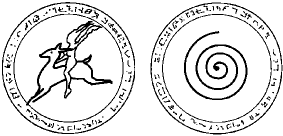

bir arkadaşını göstermektedir. Her akraba için kullanılan kutularda hem asıl hem de hale renkler için şekil 6'ya göre ayarlanmıştır. 2, 3, 4, ve 5 numaralı kutular birincil asıl renklerdir. A, B, C ve D harfli kutular ise grup üyelerinin ikincil hale renklerini
göstermektedir.
228
Bazen kendi gelişim çizgilerinde anomaliler olan ruhlarla
karşılaşırım. Bu durum, danışanlar kendi gruplarındaki ruhları
uygunsuz gibi görünen asıl renklerle anlattıklarında benim için
daha açık olur. Daha genç ruhların beyaz ışıkları başlıca bir örnektir. Aşağıdaki vakada III. Düzey ile iV. Düzeyden bir grup var. Bu denek yanında duran ve büyük ölçüde beyaz renkte bir
ruh olduğunu söylediğinde grubun bütün sarı-mavi üyelerini
incelemeyi yeni bitirmiştim.
- Vaka 32 -
Dr. N: Sizin ilerlemiş ruhlar grubunuzda beyaz bir ışığın
ne işi var?
D: Lavani yetenekleri yüzünden bizimle eğitimde. Genç
ve deneyimsiz olmasına rağmen, onun geride bırakılmamasına karar verildi.
Dr. N: Lavani sizin grubunuzda kaybolmuyor mu? Sizinle
nasıl devam edebiliyor?
D: Şu anda test ediliyor ve dürüst olmak gerekirse Lavani
biraz zorlanıyor.
Dr. N: Niçin sizin grubunuza atandı?
D: Bizim grubumuz biraz sıra dışı, çünkü deneyimsiz ruhlarla çalışma konusunda oldukça hoşgörülüyüz. Bizim gibi olan pek çok grup çok meşgul, bu yüzden de onu muhtemelen ihmal ederlerdi. Onların kıncı olacağını söylemiyorum, ama bununla birlikte o hala bir çocuk ve bize küçük, belli belirsiz enerji örüntüleriyle bir çocuk gibi bakıyor.
Dr. N: Sanırım pek çok grup böyle bir sorumluluğu üstlenmek istemez?
D: Çok doğru. Gelişmekte olan gruplar kendi işlerine fazlasıyla dalmışlardır. Bir çocuk açısından bakıldığında neredeyse o çocuğu hor görüyormuş gibi bile görünebilirler.
Dr. N: Öyleyse bana niçin Lavani'nin rehberinin onun sizinle burada olmasına izin verdiğini açıklar mısın?
229
O: Lavani büyük bir yetenek. Biz hızlı öğrenenlerden kurulu bir grubuz ve hayatlarımız gayet zordur ve hızla gelişir. (deneğim yeryüzünde henüz 1 600 yıl geçirmişti) Hızlı ilerlememize rağmen, çok ılımlı olmakla ünlüyüz, bazıları fazlasıyla öyledir. Çocukların öğretmenleri olma öğrenimi görüyoruz ve Lavani bizim için iyi.
Dr. N: Bu beni çok şaşırttı. Lavani varoluşunun başlarında
kendi grubuyla ilişkiden koparılmış mı?
O: Hayır! Bu fikre nereden kapıldın? O genellikle kendi grubuyla birliktedir (gülüyor) ve grubundakiler onun bizimle yaşadığı maceralarını bilmek istemezler. Böylesi daha iyi.
Dr. N: Niçin?
O: Şey, ona takılabilir ve çok fazla soru sorabilirler. Lavani
onlara çok bağlıdır, yetenekleri yüzünden kendi grubundan erkenden ayrılacağını bilmemize rağmen, Lavani'nin kendi arkadaşlarıyla normal bir ilişkisi olsun isteriz. Onlar
henüz aynı istekle motive değiller.
Dr. N: İyi ama ruhlar telepat olduklarına ve birbirleri hakkında her şeyi bildiklerine göre, Lavani'nin tüm bunları arkadaşlarından nasıl gizlediğini anlamıyorum.
O: Beyazların bizim yaptığımız gibi belli bazı özel şeyleri
saklayamadıkları doğrudur. Lavani bunu yapma konusunda eğitilmişti, onun potansiyeli olduğunu söylemiştim.
(duraklıyor, sonra da ekliyor) Elbette, herkes birbirinin
özel, gizli düşüncelerine saygı gösterir.
Vaka 32 gibi ruhlar bedenlendiğinde, birlikte çalıştıkları daha
genç olan ruhların hayatta onların çocuğu olmayı istemesi nadir
görülen bir durum değildir. Lavani bu deneğin günümüzde çocuğu. Tersi de doğru olabilir; yani, ilerlemiş olan ruh çocuk, daha genç olan ruh da anne-baba olabilir.
Rengi gerileyen ruhlar olduğunu işittiğim vakalar da var. Pek
çoğumuz kendi varoluşumuz içinde bazı hayatların ardından
230
geriye doğru kaymışızdır, ama rengimizin büyük bir ölçekll' �l'
rilemesi, hem ciddi hem de uzun sürmüş bir koşul yüzündl'ıı
olur. İşte, bir danışanımdan alınmış, hepimiz için acı bir mesaj lil
şıyan bir ifade:
Klaris için bu bir utanç. Yeşil rengi hep çok parlak olmuştur. Büyük bir şifacıydı, ama güç onu doğru yoldan saptırdı. Klaris için işler neredeyse çok kolaydı, çok istidatlıydı.
Aşağıya doğru kayması birçok kötüye kullanmanın görüldüğü birkaç yaşamdan sonra başladı. Saygı duyulmayı ve aşırı övgüyü çok severdi, kibri bir maske haline geldi. Klaris yeteneklerini kaybetmeye başladı, onun renginin solduğunu ve giderek daha donuklaştığını fark ettik. En sonunda Klaris öylesine yeteneksiz kaldı ki yeniden eğitim için ihraç edildi. Hepimiz onun er geç geri geleceğini dü
şünüyoruz.
Grup lardaki Ziyaretçilerin Renkleri
Arada sırada bir gruptaki bir iki ruhtan bir renk sunumunun di
ğer herkesle uyumsuz olduğunu duyarım. Bunun oldukça uzmanlaşmış bir konuğun ya da yakınlardaki bir gruptan bir ruhun geçici ziyareti anlamına gelebildiğini öğrendim. Arada bir de boyutlar arası bir gezginin ziyaretini duyarım; bu gezginin deneyimi o grubun deneyimini fazlasıyla geride bırakır. Böyle ziyaretçiler hakkındaki ilginç bir hikayeden bir alınb vermek isterim: Bizim bilmediğimiz başka boyutlardan grubumuzu ziyaret etmeye gelen ilerlemiş varlıklara baktığımızda, sanki bize ulaşmak için Işık Mercekleri dediğimiz bir ekrandan
geçmişlerdir. Arada bir rehberimiz Joshua'nın daveti üzerine gelirler, çünkü bu ziyaretçiler rehberimizin arkadaşlarıdır. Bu ruhlar önümüzden geçerken onları gümüşi renkte bir suyun akışı gibi görürüz. Bize göre bu gümüşi dere . . . saydam bir boyutlar arası zekanın saflığı . . . bir geçiş
pelerinidir. Birçok fiziksel ve zihinsel küreden geçme ve
231
oralarda işleme yeteneğine sahip olan esnek varlıklardır.
Bilgisizliğimizin karanlığını defetmeye yardım etmek için
gelirler, ama bu güzel varlıklar asla çok uzun kalmazlar.
Bu ifadeye, ruh gruplarında kısa süre görünen bu renkli klırakterlerin çok büyük bir etkisinin olduğunu da eklemeliyim.
Yukarıdaki vakada, danışanıma bu gümüşi varlıkların öğrettiklerinden kazandığı bir içgörüyle ilgili belirli bir örnek vermesini istediğimde bana şunları söylemişti: "İnsanları yorumlama konusunda daha kurnaz olarak seçimler yaparken daha fazla olasılık olduğunu görmemiz için bakış açımızı genişletirler. Bu beceri kritik bir düşünüş geliştirir ve daha büyük gerçekliklere dayanan bilgili kararlara olanak tanır."
İnsanlar ve Ru hun Renk Auraları
Ruhların Yo lculuğıyayımlandığından bu yana renkler konusunda karşılaştığım başka bir yanlış kanı daha var. Birçok kişi ruhlarla ilgili renk sınıflandırmamla insan auraları sınıflandırması arasında karşılaştırma yapmaya çalışıyor. Bu varsayımların yanlış sonuçlara götürebileceğine inanıyorum. Renk ve enerji titre
şimleri ruhlarda birbiriyle yakından ilişkilidir ve ruh dünyasının
materyal olmayan ortamını yansıtır. Dolayısıyla, fiziksel bir çevrede aynı ruh enerjisinin frekansı değişir. İnsan bedeni bu enerji örüntülerinin rengini daha da değiştirir.
Şifacılar insanların çevresindeki renk auralarını tanımlarken,
bu renkler büyük ölçüde fiziksel görünümlerinin yansımalarıdır.
Bir insan beyninin düşünceleri dışında ki bunlar duygusal yapımızdan, merkezi sinir sistemimizden ve kimyasal dengelerden de etkilenir, bedenin hayati organlarının tümü insan aurasına
karışır. Kaslar ve deri bile çevremizdeki fiziksel enerjinin yaratılmasında bir rol oynar. Elbette, ruh zihni ve bedenlerimiz arasında benzerlikler vardır, ama fiziksel ve zihinsel sağlık insan auralarındaki başlıca belirleyici etkenlerdir.
232
İnsan auralarını görmediğimi ifade etmem gerek. Bu konııd.ı
ki bütün bilgim bu alandaki uzmanlardan ve deneklerimden gl'I
mektedir. Yaşamın içinde ilerledikçe geçici bedenimizin hızlcı dl'
ğiştiği ve bunun enerjimizin dış renk düzenini etkilediğini söylerler. Ruh renklerinin değişmesi ise yüzlerce yıl gerektirir. Doğu felsefesi fiziksel bedenle birlikte bir ruh bedene sahip olduğumuza ve bu eterik bedenin kendine ait bir enerji taslağına sahip olduğuna inanırlar, ben de buna katılıyorum. Gerçek iyileştirme
hem fiziksel hem de süptil bedeni hesaba katmak zorundadır.
Meditasyon ya da yoga yaparken, bedenin çeşitli bölümleriyle
duygusal ve spiritüel enerjimizin önündeki engelleri kaldırmaya
çalışırız.
Transtaki bir denekle kendi grubundaki diğer ruhlardan ışık
enerjisinin dağılımı hakkında zaman zaman konuştuğumda, bana bir insan biçimi gibi görünen bir biçimin belli alanlarından çıkan daha güçlü enerji örüntülerinden söz edecektir. Tıpkı şimdiki hayatımıza önceki bir hayattan izleri getirebilmemiz gibi, fiziksel bedenlenmelerimizin gölgeleşmiş enerji kalıntıları şeklinde ruh dünyasına beden izleri de getirebiliriz. Bir süre için, sıradaki vakaya sorular sorarken, bu deneğin bilinçdışı açıklamalarına şakralar hakkındaki bilinçli belleğinin sızıp sızmadığını merak etmiştim. Şakraların, insan bedenindeki yedi temel noktada içimizden dışarı doğru çıkan anaforlar şeklindeki güç kaynakları olduğu düşünülür. Bu deneğe şakralar, fiziksel tezahürler yoluyla bireyselliğin spiritüel bir ifadesi gibi gelmişti.
- Vaka 33 -
Dr. N: Roy'un bu yaşamdaki ailenin fertlerinden biri oldu
ğunu ve ruh grubunuzda bulunduğunu söylemiştin.
Roy'un odaksa! enerji noktasına baktığında ne görüyorsun?
O: Beden formunun ortasından, solar pleksusun olduğu
yerden çıkan pembemsi sarı renkte bir yoğunlaşma görüyorum.
233
Dr. N: Beden formu mu? Roy niçin grubunuza fiziksel bir
beden sunuyor?
D: Yaşamda hoşumuza gitmiş olan bedenlerin özelliklerini sergileriz.
Dr. N: Pekala, karın bölgesinden çıkan bir enerji yoğunlaşması sana ne ifade ediyor?
D: Roy'un hayatlarındaki en güçlü kişisel kuvvet noktası,
bedeni ne olursa olsun, karnıdır. Çelik gibi sinirleri var.
(gülüyor) Bu alanda başka istekleri de var.
Dr. N: Roy'un metabolik enerji hızı bu niteliği gösteriyorsa, grubunuzun diğer üyelerinde bedenin belirli yerlerinden çıkan ekstra bir ışık enerjisi dağılımı belirleyebilir misin?
D: Evet, Larry'nin en büyük gelişimi kafasında. Birçok ya
şamda yaratıcı bir düşünür olmuştur.
Dr. N: Başka biri?
D: Evet, Natalie. Onun gücünün özü, sevecenliği yüzünden kalp bölgesinden daha hızlı gelişiyor.
Dr. N: Peki ya başkası?
D: Benimki boğazımdan geliyor, bunun nedeni de bazı hayatlardaki konuşma yoluyla iletişim becerilerim, şimdiki yaşamda da şarkı söyleme yeteneğim.
Dr. N: Bu enerji noktalarının insanın auralarının renk yansımasıyla bir ilişkisi var mı?
D: Rı;nk olarak hayır, genellikle olmaz. Enerji yoğunlaşmalarındaki güç açısındansa, evet.
Renkleri Ku llanarak Spiritüel Meditasyon
Bir iyileştirme alanında enerjinin yeniden dengelenmesi için çok
renkli ışıkların iyileştirici özellikleri geçen bölümde aktarılmıştı.
Ruh dünyası hakkındaki çalışmalarımı okumuş olanlar, renkler
hakkındaki bu tür bilginin fiziksel iyileştirme için de kullanılıp
kullanılamayacağını sorarlar. Kitapçılarda, çeşitli meditasyon bi-
234
çimlerini anlatan, kişinin kendi başına uygulayabileceği çok s.ı
yıda başarılı kitap var. İç benliğimizle temasa geçmenin bir aran
olarak spiritüel meditasyonun bedeni iyileştirme konusunda d.ı
büyük yararları vardır. Renk transmisyonu bir ruhun enerjisinin
ve rehberlerimizin ifadesi olduğuna göre, belki de burada renkleri kullanarak meditasyon yapmaya bir örnek versem iyi olacak.
Altı aşamalı meditatif bir egzersiz seçtim. Bu seçimi birlikte
çalıştığım elli dört yaşındaki yürekli bir kadının vizüalizasyonlarıyla, kendime ait vizüalizasyonlar arasından derledim. Bu kadın yumurtalık kanseriyle savaşı sırasında otuz bir kiloya kadar düşmüştü. Şimdiyse kemoterapi sonrası iyileşme gösteriyor ve
iyileşme hızı doktorları şaşırtıyor.
Danışanlarımdan bazıları renklerle meditasyonun kullanımıyla bir spiritüel güçlenme duygusu geliştirir. Ciddi fiziksel sağlık sorunları olanlar bana en iyi sonuçların günde bir kez,
otuz dakika ya da günde iki kez, on beş-yirmi dakika meditasyon yapılınca alındığını söylüyorlar. Bu meditasyon egzersizini fiziksel rahatsızlıklar için bir tedavi olarak önermediğimi lütfen
unutmayın. Herkesin zihin gücü ve konsantre olma yeteneği
farklıdır, tıpkı hastalıklarının doğası gibi. Bununla birlikte, ger
çekten de kişinin bağışıklık sisteminin daha yüksek Benliğimizle birleşerek artırılabileceğini düşünüyorum.
1 . Zihninizi sakinleştirerek başlayın. Sizi incitmiş olan gerçek
ya da hayali bütün yanlışlar için insanları bağışlayın. Temizleme için beş dakika ayırın; bu süre içinde hastalığınızla ilgili korkular da dahil bütün negatif düşünce enerjisini siyah bir
renk olarak zihninizde canlandırın. Bir elektrik süpürgesinin
tepenizden tırnağınıza kadar hareket ettiğini, ağrıdan ve hastalığınızın acısından kaynaklanan bütün karanlığı vücudunuzdan emip attığını düşünün.
2. Şimdi, başınızın üzerinde açık mavi bir hale yaratın, bu hale rehberinizi temsil ediyor; siz ona sevgi dolu düşünceler gönderirken onun yardımını isteyebilirsiniz. Sonra nefes alıp
235
verişinize yoğunlaşarak ve nefeslerinizi sayarak beş dakik;ı
daha geçirin. Rahatlamanın geldiğini ve gerginliğin dışarı
çıktığını düşünürken nefeslerinizi dikkatle takip edin. Nefes
alıp verişinizin beden ritminizle uyumlu olmasına dikkat
edin.
3. Bu noktada, kendi daha yüksek bilincinizi bedeninizi korumaya yardımcı olacak şekilde büyüyen beyaz-altın rengi bir balon olarak düşünmeye başlayın. İçinizden şunu söyleyin:
"İçimdeki ölümsüz parçamın, ölümlü parçamı savunmasını
istiyorum." Şimdi en derin konsantrasyonunuza başlayın. Bu
balondan beyaz ışığın saflığını çekecek ve onu organlarınıza
bir güç demeti olarak göndereceksiniz. Akyuvarlarınız bağı
şıklık sisteminizin gücünü temsil ettiği için, bu akyuvarları
kabarcıklar olarak zihninizde canlandırın ve onları vücudunuzun içinde hareket ettirin. Bu beyaz kabarcıkların siyah kanser hücrelerine saldırdığını ve aydınlığın karanlık üzerindeki gücüyle onları yok ettiğini düşünün.
4. Kemoterapi alıyorsanız, bu tedaviyi bir lavanta rengi göndererek destekleyin; bu lavanta rengini kızılötesi bir lambadan çıkıp vücudunuzun her bölümüne yayılıyor şeklinde görebilirsiniz. Bu renk bilgeliğin ve spiritüel gücün tanrısal rengidir.
5. Şimdi, kanserin etkileri yüzünden hasar görmüş olan bu
hücreleri iyileştirmek için yeşil rengi gönderin. Bu rengi, en
güç zamanlarda aralıklı olarak spiritüel rehberinizin mavisiyle birleştirebilirsiniz. Kendi tonunuzu seçin ve bu yeşili içinizi iyileştiren akışkan bir sıvı olarak düşünün.
6. Son aşamanız zihinsel kuvveti sürdürmek ve zayıf düşmüş
bir bedene cesaret vermek için bir kez daha başınızın çevresinde mavi hale yaratmak olacak. Bir kalkan olarak vücudunuzun dış bölümlerinin çevresine bu haleyi yayın. Hem içinizde hem de dışınızda bu sevgi ışığının iyileştirici gücünü hissedin. Geçici süreyle bir durma halinde olduğunuzu düşünün ve "İyileş, İyileş, İyileş" gibi seçeceğiniz bir mantrayı tekrarlayarak bitirin.
236
RUH GRUI' sisn:Mı.ı u ı
Günlük bir disiplin olarak meditasyon yapmak çok �l'Y ı...ı
zandıran sıkı bir çalışmadır. Meditasyon yapmanın tek bir doA
ru yolu yoktur. Herkes kendi entelektüel ve duygusal sistemini
ihtiyacına uyan bir çerçeve içinde birbirine bağlayan bir program bulmak durumundadır. Derin meditasyon bizi tanrısal bir bilince götürecek ve ruhun kişilikten geçici süreyle serbest bırakılmasını sağlayacaktır. Bu serbest kalmayla, odaklanmış haldeki zihindeki her şeyin tek bir bütün olarak birleştirildiği, farklı bir boyutu olmayan gerçekliğe varılabilir.
Yumurtalık kanseri olan danışanım bütün zihinsel konsantrasyonunu vücudunu iyileştirmeye yönlendirerek doktorlarına yardımcı oldu. Zihin saf, tek bir merkezde toplanmış halde oldu
ğunda, gerçekte olduğumuz kişiyi, belki de yaşam yolunda bir
yerlerde kaybetmiş olduğumuz özü bulabiliriz. Günlük meditasyon sevgi dolu ruhların varlığıyla bağlantı kurmanın bir aracı olarak da yararlı olabilir.
Enerji Renginin Fonn ları
Rengin etkilerinin dışında, gruplarda ruhları inceleme konusundaki bir diğer araç, ruhların biçimlerini karşılaştırmaktır. Bu enerji formları, şeklin simetrisi-düzensizliği, ışık yapılarının parlaklığı-donukluğu ve hareket niteliklerini içerebilir ki tüm bunlar grup üyelerinin spiritüel imzaları gibidir. Diğer ruhları gözlemlerken, bir trans halinde olan birçok kişi bir ruhun titreşimsel rezonansının farkında olur. Bir danışanımla renk tonundaki ince
farklılıkları gözden geçirdikten sonra, birlikte ruh arkadaşlarının
hareketlerinin atınımı ve titreşimsel hızını inceleriz.
Herhangi bir ruhun enerji formunu ele alırken, ilk sorum şu
olur: "Şu anki bedenlenmenden önce ruh dünyasında geride ne
kadar enerji bırakıldı?" Bu sorunun ruhun aktifliği ya da pasifli
ğiyle çok ilişkisi vardır, enerjinin parlaklığı ya da donukluğuyla
da ilgilidir. Bununla birlikte, enerji miktarına rağmen, her tarz
enerji üretimi ruhun karakteri, kapasitesi ve içinde bulunduğu
237
durumla belirlenir. Bunlar bir dizi yaşamın ardından değişebilecek değişkenlerdir.
Yeni bir danışanla yaptığım hipnoz öncesi görüşmem sırasında, o anki yaşamındaki karakterleri de incelerim. Bütün akrabaları, arkadaşları ve eski aşkları hakkında notlar alırım. Bunun nedeni şu: Onun zihninden çıkmak üzere olan bu oyunda ön sırada bir koltuktayım ve elimde bir tiyatro programı olmasını isterim. Danışanım bu oyundaki başrol oyuncusu olacaktır, diğerleri ise yardımcı rollerdedir.
Aşağıdaki vaka alıntısında, bir danışanın kendi ruh grubu
içindeki bir yardımcı rol oyuncusu hakkında hem renk hem de
formu içeren sorular sayesinde nasıl hızla bilgi kazanıldığı görülebilecektir. Danışanım Leslie ile yaptığım kabul görüşmesi sırasında, onun Rowena adlı görümcesinin kendisi için gerçek bir sorun olduğunu öğrenmiştim. Spiritüel adı Susius olan Leslie
kendisini hayatlarında güvenlik arayan ve huzurlu insanların
çevresinde olmaya çalışan biri olarak tanımlamıştı. Şu anki yaşa··
mında bu denek şunu dile getirdi: "Rowena karşıma çıkmaktan
ve bütün inançlarıma meydan okumaktan hoşlanıyor sanki."
Aşağıda Leslie'nin kendi ruh grubunun zihinsel tablosunun açılış sahnesi verilmiştir.
Vaka 34 -
-
D: (çok üzgün ve sinirli) Oh, buna inanmıyorum! Rowena
burada ... daha doğrusu bu Shath.
Dr. N: Kendi ruh grubunda Rowena ya da Shath'ı görmenin nesi yanlış?
D: (kaşları çatık, yüzü gergin) Şey, Shath . . . bozuculardan . . . biridir . . .
Dr. N: Hangi açıdan bozucu?
D: Oh . . . sorunsuz, düzgün enerji titreşimleri olanlarımıza
kıyasla.
Dr. N: Susius, görümceni izlediğinde renk ve biçim bakımından farklı olan ne görüyorsun?
238
D: (hala onun Rowena olduğunu onaylamaya çalışarak)
Orada işte, tamam! Turuncu renkte enerjisi hızla atının1
yapıyor ... tanıdık keskin ve çentikli kenarlar, bu Shath. Biz
ona Sparks (Kıvılcımlar) diyoruz.
Dr. N: Size sunduğu form, onun şimdiki hayatında olduğu
gibi burada, bu spiritüel ortamda da sana muhalif olduğunu mu gösteriyor?
D: (Leslie artık Rowena'nın varlığına alışıyor ve sesi yu-
muşuyor) Hayır . . . aslında bizi konuşturur . . . bu grubu-
muz için iyidir . . . bunu anlayabiliyorum.
Dr. N: Onun yansımalarının renk ve form açısından kendi
enerjinden nasıl farklı olduğunu düşünmek istiyorum. Bana ruh dünyasındaki kendin hakkında ne söyleyebilirsin?
D: Benim rengim fazla parlak olmayan bir beyaz, biçimim
ise güle benziyor .. . Arkadaşlarım bana Bells (çıngıraklar)
der, çünkü enerjimi. . . belli belirsiz çalan çıngırakların . . .
bir yankısını yayan sakin bir yağmur suyunun akışkan
damlacıkları olarak görürler. Shath'ın keskin bir berraklığı
var, altın rengi tonlar da görüyorum. Enerjisi parlak ve çok
kuvvetli.
Dr. N: Peki tüm bunlar sana ve grubuna ne ifade ediyor?
D: Sparks'ın çevresinde kendinden hoşnut olunmaz. O çok
kıpır kıpırdır, sürekli bir hareket girdabı. .. daima sorular
sorar ve performansımızı irdeleyip durur. Hayatlarımızda
kendimizden duyduğumuz memnuniyeti sarsan roller almaktan hoşlanır.
Dr. N: Onun Rowena olarak şimdiki bedenine kıyasla ruh
dünyasında daha az sinir edici olduğunu düşünüyor musun?
D: (gülüyor) Doğru bildin. Her şeyi kuvvetlendiren, çabuk
parlayan, asabi bir beden seçti. Bu kez (şimdiki hayatta) kocamın kız kardeşi olarak geldi. Shath çok sinir bozucu olabilir, ama artık gerçekte kim olduğunu anladığıma göre, 239
onun güdülerinin sevgiden ve bizim yapabileceğimizin en
iyisini yapmamızı istemesinden kaynaklandığını biliyorum. (yine gülüyor) Onun yavaşlamasına da yardımcı oluruz, çünkü düşünmeden ateşe atlama eğilimi var.
Dr. N: Arkadaş çevrenizde enerjisi Shath'a yani Rowena'ya benzeyen başkaları var mı?
O: (sırıtıyor) Evet, en iyi arkadaşım Megan'ın kocası Roger. Buradaki adı ise Siere.
Dr. N: Onun enerjisi nasıl görünüyor?
O: İleri geri zikzaklar çizen geometrik, köşeli örüntüler yayıyor. Bunlar tıpkı dili gibi keskin dalgalar ve belli bir uzaklıktan bakıldığında enerjisi bir orkestrada çalan büyük ziller gibi yankı yapıyor. Siere cüretkar ve gözü pek bir ruhtur.
Dr. N: Enerji biçimleri hakkında bana söylediklerine dayanarak, Shath ve Siere (Rowena ve Roger) hayatta birbirlerine uygun eşler olabilir miydi?
O: (birden gülmeye başlıyor) Şaka yapıyor olmalısın! Birbirlerini öldürürlerdi. Hayır, Rowena'nın kocası Sen (benim erkek kardeşim Bill) sakin bir ruhtur.
Dr. N: Lütfen onun enerjisini anlat.
O: Yeşilimsi-kahverengi, sağlam bir enerjisi var. Bilirsin
hafif bir hışırtı varsa ortalıkta Asmalar var dernektir.
Dr. N: Asmalar? Ne anlama geldiğini anlamadım.
O: Bizim grubumuzda bir takma ad alırsan bu sana yapı
şır kalır. Sen, asma gibi görünen titreşimsel dalgalara sahip . . . örgülü iplikler oluşturan örüntüleri var ... uzun saçlardaki gibi.
Dr. N: Bu enerji örüntüsü bir şekilde Sen'i tanımlıyor mu?
O: Kesinlikle. Karmaşık ama değişmez, çok güvenilir. Bu,
sevgi dolu bir uyum içinde çeşitli elementleri bir arada dokuma yeteneğini yansıtıyor. Asmalar ve Kıvılcımlar güzel bir şekilde birbirine karışabilir çünkü Rowena, Bill'in ken-240
RUH GRUP sls'f'l.'Ml.l.U/
dinden fazla hoşnut olmasına asla izin vermez, Bill de kendinden çok hoşnut ve ona yaşamda bir dinginlik sağlıyor.
Dr. N: Devam etmeden önce, ruh grubunuz için size verilmiş olan ruh adlarının hepsinin S harfiyle başladığını fark ettim. Bunun bir anlamı var mı? Doğru biçimde söyledi
ğimden bile emin değilim.
D: Bu konuda kaygılanma, onların enerji hareketinin tonlanışlarını yayan sestir. Bu, arkadaşlarımın gerçekte kim olduğunu yansıtır.
Dr. N: Ses? Yani grubunuzun enerjisinin renk ve formunun
yanı sıra dalgaları bizim yeryüzünde duyabildiğimiz gibi
her birine bağlı bir sese sahip, öyle mi?
D: Eh . . . öyle bir şey . . . her ne kadar bedenli haldeyken bu
titreşimleri algılayamasak da bu, yeryüzüyle özdeşleştiğimiz enerji rezonansıdır.
Dr. N: En iyi arkadaşın Megan'a dönelim mi? Ondan söz
ettin, ama onun titreşimsel örüntü rengini bilmiyorum.
D: (sıcacık bir gülümseyişle) Onun enerjisi belli belirsiz,
açık sarı ... bir buğday tarlasında güneş ışığı altında oyna-
şır gibi . . . rahat, düz ve kırılgan.
Dr. N: Peki bir ruh olarak karakteri?
D: Mutlak, koşulsuz sevecenlik ve sevgi.
Ses ve bazı spiritüel adların benzerliği konusuna devam etmeden önce, danışanım Leslie ile bu yaşamdaki en iyi arkadaşı Megan arasındaki karmik bağı açıklamam gerek. Bana göre bu duygusal açıdan zorlayıcı bir hikaye. Yaka 34'le yaptığım kabul görüşmesi sırasında Leslie, profesyonel bir şarkıcı olduğunu ve arada sırada boğazıyla gırtlağının özellikle hassaslaştığını anlatmıştı. Bunu, basit bir mesleki risk olarak görmüş ve geçmiş yaşamındaki ölüm sahnesine ulaşana dek üzerinde düşünmemiştim. O
zaman Leslie'nin boğazıyla doğrudan ilişkili olan önceki bir beden izinin programını kaldırmak gerekmişti.
241
Geçmiş hayatlarında Megan, Leslie'nin küçük kız kardeşiydi.
Genç bir kız olan Megan, babasının zoruyla zengin, merhametsiz ve kendisinden daha yaşlı bir adam olan Hogar ile evlendirilmişti. Hogar onu hem dövüyor hem de cinsel olarak istismar ediyordu. Kısa bir süre sonra Leslie, aşık olduğu genç bir adamla (Roger) kaçması için Megan'a yardım etmişti. Öfkeli Hugar ise o gece Leslie'yi bularak gözden uzak bir yere sürüklemiş ve kardeşinin nerelerde olduğunu öğrenmek için saatlerce döverek ona tecavüz etmişti.
Leslie, Hogar boğazını sıkmaya başlayana kadar hiçbir şey
söylememiş, sonra da yanlış yönü işaret ederek kardeşine kaçması için daha fazla zaman kazandırmıştı. Hogar ölene kadar Leslie'nin boğazını sıkmış, sonra da aceleyle Megan'ın peşine
düşmüştü. Ama onu hiç bulamadı. Görüşmemiz sırasında daha
sonra Leslie şunu söylemişti: "Bu yaşamda şarkı söylemek bir
sevgi ifadesi, çünkü sesim son yaşamda sevgi konusunda sustu -
rulmuştu."
Sesler ve Spiritüel Adlar
Renk, form, hareket ve sesin ruhların kendi gruplarında nasıl
kendilerine özgü işaretler olduğunu gördük. Her ne kadar hem
ses titreşimi hem de ışık enerjisi, titreşimsel biçimler ve bunların
dalga hareketleri ruh grubu üyeleri arasında aynı olmasa da bu
dört öğe birbiriyle ilişkili gibi görünmektedir. Ancak, belli ruhlar
arasında bu öğeler açısından benzerlikler vardır ve ses de spiritüel regresyon terapisti için en açık olanıdır.
Ruh dünyasında konuşma dilinin yapısının çok ötesine geçen
bir dil vardır. Bana şunu söylüyorlar: Gülme, mırıldanma ve şarkı söyleme var, tıpkı rüzgarın ve yağmurun sesinin olması gibi, ama bunlar sözle anlatılamaz. Bazı denekler kendi gruplarındaki ruhların adlarını, sanki birbiriyle uyumlu olsunlar diye müzikal bir akort yapar gibi telaffuz eder. Vaka 34, özel bir arkadaş
242
RUH GRUP SIS'l'l.'MI I UI
ortamında spiritüel adların telaffuzunun S harfiyle bir SL'S lwıı
zerliğini taşımasına bir örnektir. Yaka 28'de ise iki spiritüel iii�
retmenin adları Bion ve Relon'du. Bir küme grubunda bu Şl'ki l ·
de kendini gösteren belirli ruh enerjileri arasında ritmik bir kar
şılıklı oyun var gibi görünmektedir.
Bazı hipnoz denekleri spiritüel adları dile getirmede zorluk
çeker. Bu denekler zihinlerinde ruhların adlarının dilimize aktarılması imkansız olan bir titreşimden oluştuğunu söylerler. Danışanlarımdan biri şöyle demişti: "Benim deneyimlerime göre, bizim ruh adlarımız duygulara benzeyen bir şey, ama insani
duygular değil, bu yüzden adlarımızı sesle aktaramam." Ayrıca
adlara ilişkin bir ses sembolizmi de görülmektedir; bu sembolizm bir danışanın insan formundayken deşifre edemediği anlamlar gizliyor olabilir.
Bununla birlikte, bir spiritüel adı hatırlamaya uğraşan birçok
danışan için, seslerin kullanımı ve sesin kadansı bu uğraşa katkıda bulunabilir. Bir denek, kendi küme grubunun üyelerini nitelendirmek için ünlü sesleri kullanabilir. Grubundaki üç üyeyi Qi, Lo ve Su diye adlandıran bir başka danışanım olmuştu. Benim için grup adlarının alfabenin bir harfiyle vurgulandığı bu tür vakalar olması alışılmadık bir şey değil. Bazı nedenlerden
ötürü, birçok spiritüel rehberin adlarının sonunda bir A harfi de
görülmektedir.
Trans halindeyken, spiritüel adları telaffuz etmeye çalışmak
yerine bu adların harflerini söylemeyi daha kolay bulan deneklerim de olur. Yine de aynı danışanlar harfleri söylemenin ses kadar bir anlam ifade etmediğini vurgulamışlardır. Spiritüel adlarla ilgili araştırmalarım gerçek adın kısaltılmış biçimlerini de ortaya çıkarabiliyor. Bir danışanım şöyle demişti: "Benim ruh grubumda, rehberimizin takma adı Ned'dir." Bununla yetinmeyip ısrar ettiğimde bu rehberin tam adını bir kağıda yazmıştı. Kağıtta Needaazzbaarriann yazıyordu. Mesajı almıştım. O görüşmenin geri kalanı boyunca Ned ile devam etmiştik.
243
Spiritüel rehberinin adını söylemenin o ilişkiyi bir şekilde tehlikeye atacağını düşünen bir danışanım olduğunda mahremiyet de etkenlerden biridir. Böyle bir durumda onların bu düşüncesine saygı duymam ve sabırlı olmam gerekir. Görüşme ilerledikçe, bu rahatsızlık ortadan kalkabilir. Örneğin bir danışanım, rehberinin adının Mary olduğunu söylemişti. Daha sonra da şunu eklemişti: "Mary senin önünde ondan bu adla söz etmeme izin veriyor." Bunu kabul ettim ve bir süre daha bu şekilde devam ettik, sonra birden rehberinin adı Mazukia oldu. Bir regresyonda bilgi
almak için zorlamanın uygun olmadığı bazı anlar olur.
Son olarak, kendi ruh adlarımızın biz yavaş yavaş geliştikçe
bir parça değişebildiğini de söylemem gerek. Oldukça ilerlemiş
düzeydeki bir deneğim bana genç bir ruhken adının Vina oldu
ğunu, bununla birlikte artık Kavina'ya dönüştüğünü söylemişti.
Bunun nedenini sorduğumda ise kendisinin artık Karafina adında kıdemli bir rehberin izdeşi olduğu yanıtını vermişti. Ruh dünyasında bu adların benzer bir şekilde söylenmesinin anlamı
konusunu sorguladığımda, bana bunun beni ilgilendiren bir şey
olmadığını söylediler. Belli bir mahremiyet sınırını geçtiğimi dü
şünürlerse soruları aceleyle kapatmaktan hiç çekinmeyen danı
şanlarım da var.
Ruh Çalışma Grupları
İlk kitabımda, tüm bir bölümü başlangıç düzeyi, orta düzey ve
ilerlemiş düzey ruh grupları ve onların rehberlerini incelemeye
ayırmıştım. Ayrıca, ruhların kaya, toprak, bitki ve alt düzey ya
şam formları gibi fiziksel maddeler yaratma ve biçimlendirmeyi
öğrendikleri grup enerji eğitimine dair örnekler de vermiştim.
Ruh ortaklıklarında yaşamın başka yönlerine ilişkin okuyucunun bilgisini daha da arbramayacağım sürece bu konuları tekrar etmek niyetinde değilim.
Bu kısımda ruh çalışma gruplarındaki öğrenenlerle bu bölümde daha önce gözden geçirilen okullar ve dersliklerin yapısal yön-244
RUH GRUP sJsnMı.rnı
leri arasındaki ilişkileri inceleyeceğim. Spiritüel öğrenim mL•rkl':t.
!erinin danışanlanm tarafından mutlaka bir derslik ya da kütüphane ortamı biçiminde görselleştirilmesi gerekmiyor. Genellikll'
bu merkezler sadece "evimizin yeri" olarak betimlenir. Böyle olsa
bile, spiritüel öğrenim ortamlarının resimleri danışanlarımın zihninde öğrenim dönemlerini tarhşırken hızla değişebilmektedir.
Hayatlar arasındaki yaşamımız hakkındaki araştırmalarım
yayımlandığında, bazı insanlar ruhların öğrenimi için spiritüel
modeller olarak insanların okul binaları ve dersliklerine yaptı
ğım benzetmeleri eleştirdiler. Colorado'lu bir çift bana şunları
yazmıştı: "Ötedünyadaki okullara yaptığınız göndermelerinizi
nahoş buluyoruz, bu muhtemelen sizin eski bir eğitimci olarak
taşıdığınız önyargılarınız." Başkaları da kendileri için okulların
bürokrasi, otoriterlik ve diğer öğrencilerin gözünde kişisel olarak küçük düşürülmeyle dolu bir sürü kötü deneyim olduğunu söylediler. Öte tarafta bildiğimiz okul sıralarına benzeyen herhangi bir şey görmek istememişlerdi.
Okulda geçirdikleri zamana dair daha acı anıları olan okuyucular olduğunu biliyorum. İşin üzücü yanı, yeryüzündeki okullar, diğer kurumlarda olduğu gibi, insanoğlu tarafından sergilenen kusurlar içerir. Öğretmenler ve öğrenciler kibirden, ufak tefek zorbalıklardan ve başkalarına karşı ilgisizliklikten suçlu olabilirler. Öğrenme nerede gerçekleşirse gerçekleşsin, bir inceleme vardır. Aynı zamanda, birçoğumuz için hayat boyu sürecek ilişkiler kurduğumuz öğrenci arkadaşlarımız ve bize temel bilgilerimizi öğreten ilgili öğretmenlerimiz bulunmaktadır.
Spiritüel bilgi edinmenin işlevsel yönleri insan zihni tarafından öğrenim merkezleri biçiminde çevrilir ve rehberlerimizin, gezegenimize gelen ruhlar için dünyevi yapıların görselleştirmelerini yaratmalarında parmakları olduğundan eminim. İpnoz altındaki insanlar bazı açılardan yeryüzüne biçim ve yapı benzerlikleri olduğundan söz ederler, ama anlattıkları bu şeylerde başka açılardan büyük farklılıklar da vardır. Danışanlarım bana
245
göksel çalışma yerlerinde herkese gösterilen inanılmaz nezaket,
yardımseverlik ve sınırsız sabrı anlatırlar. Her ruhun performansının eş düzeydeki öğrenciler tarafından analizi bile bir sonraki bedenlenmede işlerin daha iyi olmasını sağlamak için sevgi, saygı ve karşılıklı bir anlayışla yapılır.
Ruh grupları bireyselciliği takdir eder. Göze çarpmanız ve
katkılarda bulunmanız beklenir. Güçlü ruhlar ve sakin ruhlar
vardır, ama ne baskı yapan ne de istenilmediği halde sıkıntı veren bir ruh yoktur. Bireyselcilik takdir edilir, çünkü her ruh benzersizdir, gruptaki diğerlerini tamamlayan güçleri ve zayıflıkları vardır. Benzerliklerin yanı sıra farklılıklarımız yüzünden belli
ruh gruplarına atanırız. Bu karakter farklılıkları kabul edilir ve
saygı duyulur, çünkü hayatlarını paylaşan ruhlar her yaşam deneyimine zengin bir kişisel bilgelik getirir.
Ruhlar kendi gruplarında ince, güzel sataşmalar yapmayı ve
mizah kullanmayı severler, ama daima birbirlerine saygı gösterirler, yaşamda kendilerini incitmiş bedenlerde olanlara bile. Bağışlamanın ötesinde, hoşgörü gösterirler. En olumsuz kişilik özelliklerinin o kişinin bedeninin egosuna bağlı olduğunu, bunun o ki
şilere üzüntü verdiğini ve kederin o beden öldüğünde gömüldü
ğünü bilirler. Olumsuz duygular listesinin başında öfke ve korku
yer alır. Ruhlar belli dersleri hem öğrenme hem de öğretmeye gönüllü olurlar, üstelik karmik planlar belli dünyevi ortamların de
ğişkenleri nedeniyle her zaman tasarlandıkları gibi gitmeyebilir.
Bir konuşmamdan sonra bir psikiyatrın elini kaldırıp "Ruh
grupları hakkındaki sözleriniz bana kabileciliği anımsatıyor" dediğini hatırlıyorum. Bu söze ruh gruplarının spiritüel bir toplulukta birbirlerine verdikleri yoğun karşılıklı destek ve büyük bağlılıkları açısından bakıldığında kabilesel gözüktükleri yanıtını vermiştim. Bununla birlikte, ruh grupları diğer gruplara karşı ilişkileri bakımından kabilesel değildir. Her toplumun en iyi durumda birbirine güvenmeme, en kötü durumda ise zulüm yapma gibi çok kötü bir alışkanlığı vardır. Ruh dünyasındaki toplu-246
RUH GRUP S/S'l'l:Ml.I U I
luklar ise karşılıklı ilişkilerinde özenli, ılımlı ya da uysal ıılııı.ı
eğilimindedirler, ama ruh grupları içinde ya da ruh grupları ara
sında ayırım yapma ya da yabancılaşmaya dair hiçbir kanıt gör
medim. İnsanların tersine, bütün spiritüel varlıklar birbirinl'
bağlıdır. Aynı zamanda, ruhlar diğer grupların kutsallığına çok
büyük bir saygı gösterirler.
Bir üniversitede yarım gün öğretmenlik yaptığım sıralarda,
sınıflarımdaki yetişkinler de dahil öğrencilerimden bazılarının
gerçekleri kendi değer örüntüleriyle karıştırdıklarını görmüştüm. Kavramsal sorunlarla uğraşırken, yanlış bir öncül yüzünden birbiriyle tartıştıkları, hatta birbirini yalanladıkları anlar da olurdu. Yine de bu, öğrencilerin doğasıdır. En sonunda fikirleri
daha etkili bir şekilde değerlendirmeyi ve sentez yapmayı öğrendiler. Bu geçmiş deneyimim ruh dünyasındaki öğretim konusunda bana bir bakış açısı kazandırdı.
İpnoz araştırmalarımın ilk yıllarında, spiritüel dersliklerde
hiçbir şekilde kendini aldatma olmaması beni çok şaşırtmıştı.
Çok göz önünde olmamakla birlikte spiritüel rehberlerin sanki
her yerde bulunduğunu gördüm. Öğretmenlerimiz spiritüel çalışma oturumlarına gelir gider, ama asla kendini keşfetmeyi engellemezler. Ruhlar, her şeye dair sınırsız bir bilgiye sahip olarak, henüz her şeyi bilmeseler de karmik dersler ve geçmiş ya
şam olaylarında oynadıkları roller hakkında hiçbir kuşku taşımazlar. Ruh dünyasının bir aksiyomu, performans bakımından ruhların daima kendilerine çok sert biçimde davranmalarıdır.
Ruh çalışma grupları içinde, harika bir rasyonel düşünüş
açıklığı vardır. Kendini aidatına görülmez, ama şunu da söylemeliyim ki her yaşamda sıkı çalışma motivasyonu bütün ruhlar arasında aynı değildir. Bana, "Bir süreliğine dinleneceğim"
diyen danışanlarım oldu. Dinlenme, bedenlenme hızlarını yavaşlatma, kolay bedenlenmeler seçme ya da her ikisini birden yapma anlamına gelebilir. Öğretmenleri ve meclis, bu karardan
mutlu olmasalar da saygı gösterirler. Ruh dünyasında bile, bazı
247
öğrenciler her zaman ellerinden gelenin en iyisini yapmamayı
seçebilir. Bunların dünyaya bağlı ruhlardan oluşan farklı bir
azınlık olduğuna inanıyorum.
Yunanlılar için "persona" sözcüğü "maske" ile eşanlamlıydı .
Persona, ruhun herhangi bir yaşam için misafir olduğu bir bedeni kullanma biçimi için uygun bir terimdir. Yeni bir bedende bedenlendiğimizde, ruhun karakteri bir persona oluşturacak şekilde misafir olduğu bedenin tabiatıyla birleşir. Beden ruhun dışsal anlamda kendini göstermesidir, ruh Benliğimizin bütünüyle vücut bulması anlamına gelmez. Yeryüzüne gelen ruhlar kendilerini bir dünya sahnesindeki maskeli oyuncular olarak düşünürler.
Shakespeare'ın Macbeth'inde kral ölüme hazırlanırken bize şöyle der: "Hayat yürüyen bir gölgeden, sahnede kasılarak yürüyen ve sahneye çıkma saati için endişelenen kötü bir oyuncudan başka bir şey değildir." Bu ünlü dize bize ruhların bazı açılardan yeryüzündeki yaşamları hakkında hissettiklerini anlatır, oyun
bir kez başladıktan sonra pek çoğumuz bir oyunun içinde oldu
ğumuzu bilmeyiz, ta ki bitene dek, bunun nedeni çeşitli hafıza
kaybı bloklarıdır.
Dolayısıyla bir oyun benzetmesi, tıpkı derslik benzetmesi gibi,
danışanlarımın derin bir hipnotik trans halinde gördükleri şeye
uygundur. Özellikle zor geçen bir yaşamın ardından kendi ruh
gruplarına geri döndüklerinde arkadaşları tarafından alkışlandı
ğını ve "Bravo!" tezahüratlarıyla karşılandığını arılatan danışanlarım oldu. Alkış, yaşam oyununun son perdesinin sonunda iyi yapılan bir işin karşılığıdır. Bir deneğim şunları söylemişti: "Grubumda hayattaki son yaşamımızın önemli rollerindeki üyeler, oyun bittikten sonra ve sıradaki oyunun başlangıç provalarından
önce oynadığımız ayrı ayrı sahneleri çalışmak için bir köşeye çekileceklerdir." Deneklerimin sıradaki oyunda yani şimdiki hayatlarında, belli bir rolün önerilmesi üzerine güldüklerini ve son rol dağılımı gerçekleşmeden önce gelecekte kimin hangi rolü oynayacağı konusunda tartışmalar yapıldığını sıklıkla duyanın.
248
Bu oyunda rehberlerimiz, geçmiş yaşam sahnelerini bizimlı'.
hem iyi hem de kötü zamanlar açısından kare kare inceleyen yi�
netmenler olur. Kararlardaki hatalar, küçük parçalar halinde sunulur. Olası tüm sonuçlar çalışılır ve her durumda yapılmış olabilecek farklı seçimlerle birlikte o sahneler için yeni senaryolar tasarlayarak karşılaştırılır. Davranışsal örüntüler titiz bir şekilde
her oyuncuyla incelenir, bundan sonra da senaryodaki her rol
gözden geçirilir. Ruhlar bazı durumlarda birbirleriyle rollerini
değiştirmeye ve kendi gruplarından farklı bir oyuncuyla ya da
yakındaki bir gruptan çağrılan biriyle sonuçları test etmek için
önemli sahneleri en baştan bir daha oynamaya karar verebilirler.
Deneklerimi bu rol değişimleri konusunda konuşmaya teşvik
ederim. Ruhlar diğer oyuncular aracılığıyla geçmiş performanslarına tanıklık ederek bakış açısı kazanırlar.
Geçmiş yaşam alternatiflerinin yeniden yaratılması bir psikodrama ortaya koyar; bunun ruhun şimdiki hayatında iyileştirici bir araç olarak yararlı olduğunu gördüm. Ruh grupları tarafından yapılan bu sahne benzetmeleri, yeryüzündeki yaşadıklarını basit kişileştirmeler olarak önemsizleştirmez. Ruha objektif bir
anlayış aracı sağlar ve gelişme isteğini artırır. Sistem, usta işi bir
sistemdir. Ruhlar asla yaratıcılığı, özgünlüğü ve insan ilişkilerinden bilgelik edinerek sıkıntıları yenme yönünde bir isteği uyandıran bu eğitimsel uygulamalardan asla sıkılır gibi görünmezler.
Her zaman bir sonrakinde daha iyisini yapmak isterler. Tarzı ne
olursa olsun, öğrenim yerleri ruhlar için oyun bittikten sonra en
iyi çözümlere yönelik olası bütün hamleleri tekrar gözden geçirmelerinde ilgi çekici bir satranç tahtası görevi yapar. Doğrusu, deneklerimden bazıları bütün bu yeniden bedenlenme sürecine
"Oyun" adını vermektedir.
Bir kişinin bu oyundaki performansının sonucu çok yeterli,
kabul edilebilir, yetersiz derecelerinde değişiklik gösterebilir.
Bazı okuyucuların kuşku içinde bunun yeryüzündeki eğitime
ait bir notlandırma gibi göründüğü sonucunu çıkarabileceğinin
249
farkındayım. Bana ruh gruplarında arkadaşlarımızın yaphğı performans değerlendirmesinin korkutucu olmadığını söylüyorlar; tersine bu, motivasyonu teşvik eden bir şeydir. Bana öyle görünü yor ki pek çok ruh bir sonraki yaşama ilişkin daha iyi fragmanlar olması amacıyla oynamış oldukları son yaşam oyununu gözden geçirme isteğiyle motive oluyor. Tıpkı şampiyon atletler
gibi, onlar da her performansı geliştirmeye çabalamak isterler.
Eninde sonunda belli bir gelişme ve ustalık düzeyinde oyunun
bu yönünün perdenin ve fiziksel bedenlenmelerinin kapanışıyla
biteceğini bilirler. Yeryüzüne gelen ruhların amacı budur.
Bu kısmın başlangıcında da ifade ettiğim gibi, öğrenim merkezlerindeki eğitim geçmiş hayatların incelenmesiyle sınırlı de
ğildir. Diğer tüm etkinliklerin yanı sıra, enerji yönlendirilmeleri
eğitimin çok önemli bir parçasıdır. Bu becerilerin kazanılması sınıf çalışmalarında değişik biçimlerde olabilir. Daha önce mizahın ruh dünyasının çok önemli bir niteliği olduğunu söylemiştim. Sıradaki vakadaki öğrenci yaratma sınıflarından birinin nasıl kontrolden çıktığını anlahrken bize bu duyguyu vermektedir: Vaka 35 -
-
Dr. N: Okul dersliğine benzeyen bir yerde grubunuzun nasıl toplandığını anlattın, ama orada neler olup bittiğinden emin değilim.
D: Enerjimizle yaratma eğitimi konusunda uygulama yapmak için biraraya geldik. Rehberim Trinity, üzerinde çalı
şacağımız çizimi yaptığı tahtanın önünde duruyor.
Dr. N: Peki şimdi ne yapıyorsun?
D: Diğerleriyle birlikte masamda oturuyorum. Trinity'yi
izliyoruz.
Dr. N: Bana bunu betimler misin? Uzun bir masada diğerleriyle birlikte bir sıra halinde misiniz, yoksa başka bir şey mi?
D: Hayır, hepimizin kendine ait bir masası var ... üstlerinde
açılan bölmeleri olan masalardan.
250
Dr. N: Arkadaşlarına göre sen nerede oturuyorsun?
D: Solda, arkalardayım. Yanımda haylaz Ca-ell (deneğimin şimdiki yaşamındaki erkek kardeşi) var. Jac (deneğin şimdiki kocası) hemen arkamda oturuyor.
Dr. N: Şu anda odadaki ortam nasıl?
D: Sakin ... oldukça rahat, çünkü bu ödev yani Tirinity'nin
çizimini yapmasını seyretmek o kadar basit ki neredeyse
sıkıcı diyebilirim.
Dr. N: Ya, gerçekten mi? Trinity ne çiziyor peki?
D: O şey çiziyor . . . şey, farklı enerji parçalarından . . . çabucak nasıl bir fare yapılacağını.
Dr. N: Bu ödevde enerjinizi birleştirmek için gruplara ayrılıyor musunuz?
D: (başını sallayarak) Oh, hayır. Bunu geride bıraktık. Şimdi ayrı ayrı test edileceğiz.
Dr. N: Bu testi anlatır mısın lütfen?
D: Zihinlerimizde çabucak bir fareyi canlandıracağız . . .
bütün bir fare yaratmak için gereken enerji parçalarına uygun biçimde. Herhangi bir yaratma işinde enerjinin nasıl düzenleneceği konusunda bir ilerleme düzeni vardır.
Dr. N: Yani bu test, bir fare yaratmada izlenecek uygun
adımlarla mı ilgili?
D: Hımm . . . evet. . . ama aslında, bu bir hız testi. Yaratma
eğitimindeki verimliliğin sırrı hızlı kavramsallaştırmadır
yani, ilk önce hayvanın hangi parçasından başlanacağını
bilmek. Sonra, uygulanacak enerji miktarını bulmaya çalı
şırsın.
Dr. N: Bu zor görünüyor, ne dersin?
D: (sırıtarak) Kolay. Trinity daha karmaşık bir yaratık seçmeliydi.
Dr. N: (inatla) Şey, bana öyle görünüyor ki Trinity ne yaptığını biliyor. Anlamadığım şu . . . (kahkahalarla sözümü kesiyor, ben de ona ne olduğunu soruyorum)
251
D: Ca-ell bana göz kırptı ve masasının üstündeki bölmeyi
açtı, orada koşuşturup duran beyaz bir fare gördüm.
Dr. N: Bu onun bu ödevi geçtiği anlamına mı geliyor?
D: Evet, gösteriş yapıyor.
Dr. N: Trinity tüm bunların farkında mı?
D: (hala gülüyor) Elbette, o hiçbir şeyi kaçırmaz. Sadece
duruyor ve şöyle diyor: "Tamam, madem başlamaya o kadar hazırsınız öyleyse bunu çabucak yapın bakalım."
Dr. N: Sonra ne oluyor?
D: Odanın her tarafında koşturup duran fareler var. (kıkır
kıkır gülerek) Ben kendi fareme normalden daha büyük
kulaklar yaptım, sırf eğlence olsun diye, ortamı daha da
neşelendirmek için yani.
Bu kısmı grup enerjisi kullanımıyla ilgili daha ciddi bir vak;ı
örneğiyle kapatacağım. Bu vaka daha önce duymadığım türdl'
bir dersi anlatıyor. Vaka 36, yeryüzünde henüz bedenlenmiş olan
dördüncü bir üyeye yardım etmek isteyen üç arkadaştan oluşan
bir grupla ilgili. Önceki vakadaki ruhların yüksek düzey yetene
ğinin tersine, bu ruhlar 11. Düzey' e henüz geçmiş olan bir öğrenim grubunun üyeleri.
- Vaka 36 -
Dr. N: Çalışma grubunuzda olan önemli etkinliklerin hepsini zihninde canlandır ve lütfen bana önemli bir egzersiz seçip bu egzersizde ne yaptığınızı anlat.
D: (uzun bir duraklama) Oh .. . sen şeyi bilmek istiyorsun . . . peki, iki arkadaşımla birlikte bir bebeğin bedenine girdikten sonra Kliday'e pozitif enerjiyle yardım etmek
için elimizden geleni yapıyoruz. Bunun işe yaramasını istiyoruz, çünkü çok geçmeden hepimiz onu izleyeceğiz.
Dr. N: Burada biraz yavaşlayalım. Şu anda üçünüzün yaptığı şey tam olarak ne?
252
D: (derin bir nefes alıyor) Birlikte daire şeklinde oturuyoruz ... öğretmenimiz arkamızda duruyor ve işleri idare ediyor. Kliday'in çocuk zihnine birleşmiş bir enerji demeti gönderiyoruz. O buradan henüz ayrıldı ve . . . şey . . . güvenini kırmak istemem ama kolay bir zamanı olmayacak.
Dr. N: Anlıyorum . . . belki, işleri biraz aydınlatmak için bu
konuda biraz konuşabiliriz. Yapmakta olduğunuz şeyleri
biraz daha tartışmanın iyi olacağını düşünmüyor musun?
D: Sanırım . . . sanırım öyle . . . Zarar vermek istemiyorum . . .
Dr. N: (yumuşak bir ses tonuyla) Bana Kliday'in gebelikten ne kadar süre sonra bebeğe katıldığını söyler misin?
D: Dördüncü ayda. (duraklıyor, sonra da ekliyor) Fakat biz
ona altıncı ayında yardım etmeye başladık. Dokuzuncu
aya kadar sürdürmesi zor bir iş bu.
Dr. N: Anlayabildiğim kadarıyla gerekli olan konsantrasyon ve hepsi. (duraksama) Kliday'in niçin üçünüzün yardımına ihtiyacı olduğunu söyler misin?
D: Ona, bu çocuğun tabiatına daha iyi uyum sağlaması
için yardımcı olacak şekilde biçimlendirilmiş cesaret verici bir enerji göndermeye çalışıyoruz. Bir bebeğe katıldığınız zaman bu ellerinize hem kendiniz hem de çocuk için tam ölçüde olan bir eldiven geçirmeye benzemeli. Kliday'in eldiveni bu kez pek uymuyor.
Dr. N: Bu bilgi siz ve öğretmeniniz için bir sürpriz mi?
D: Hayır, aslında değil. Anlamalısın, Kliday sakin, huzurlu bir ruhtur, bu bebekse huzursuz, sinirli bir zihne sahip . . . kendisini neyin beklediğini bilmesine rağmen bu birleşme Kliday için zor.
Dr. N: Onun bu bebek seçilmeden önce belli bir tür mücadele istediğini mi söylüyorsun?
D: Evet, böyle bir bedenle başa çıkmayı öğrenmesi gerektiğini biliyordu, çünkü sinirlerini kontrol edemediği için daha önce sıkıntılar yaşamıştı.
253
RUHLARIN KADERİ
Dr. N: Bu çocuk saldırgan bir kişi mi olacak? Belki de bazı
çekingenlikleri. . . duygusal çatışmaları vb. olan biri?
D: (gülüyor) Bildin. İşte benim ağabeyim.
Dr. N: Şimdiki hayatında mı demek istiyorsun?
D: Evet.
Dr. N: Peki senin dışındaki diğer iki ruh Kliday'in hayatında hangi rolleri alacak?
D: Zinene onun karısı, Monts da en iyi arkadaşı.
Dr. N: İyi bir destek ekibi gibi görünüyor. Kliday'in niçin
bir bedendeki böyle A tipi bir kişiliğe ihtiyaç duyduğunu
biraz daha açıklayabilir misin?
D: Pekala, Kliday çok düşüncelidir. Her şeyi zihninde
uzun uzun tartar ve farazidir. Olaylara atlamaz. Bu bedenin onun yeteneklerini artırabileceği, aynı zamanda bu çocuğa da yardımcı olabileceği düşünüldü.
Dr. N: Kliday'in son yaşamında bir sorun mu oldu?
D: (omuz silkerek) Sorunlar, sorunlar . . . aynı türde beden . . . obsesyonlara ve bağımlılıklara takılıp kaldı. . . çok az kontrol. Hem Zinene' e de zarar verdi.
Dr. N: Öyleyse niçin?
D: (araya giriyor) Biz gerçekten de bu son yaşamı iyi çalıştık . . . her şeyi defalarca gözden geçirdik . . . Kliday aynı tür bedende bir şans daha istedi. Zinene'e tekrar eşi olup olmayacağını sordu, o da kabul etti. (denek gülmeye başlıyor) Dr. N: Seni güldüren ne?
D: Ama bu kez ben onun erkek kardeşi olarak gidiyorum;
onu dengede tutmaya yardımcı olacak oldukça güçlü bir
bedenim var.
Dr. N: İstersen bu konuyu enerji demeti egzersizinizle bitirelim. İki arkadaşınla birlikte Kliday' e yardım etme konusunda enerjinizi nasıl kullandığınızı anlatır mısın?
D: (uzun bir duraklama) Kliday'in enerjisiyle bebeğinki
uyumlu değil.
254
RUH GRUI' S/S'/'l'ı\11 1 il i
Dr. N: Bebeğin duygusal enerjisi dağılmış, Kliday de bu
nunla uyum sağlamakta zorluk yaşıyor gibi mi?
O: Evet.
Dr. N: Bu beyinden çıkan elektrik impulsları örüntüleriyle
mi ilgili, yoksa başka bir şeyle mi?
D: (duraksama) Evet, sinir uçlarından gelen . . . düşünce süreçleri (duruyor, sonra da devam ediyor) Kliday'in bunu izlemesine yardım etmeye çalışıyoruz.
Dr. N: Bebek Kliday'e dışarıdan gelen biri olarak direnç
gösteriyor mu?
D: Ah, hayır .. . Öyle olduğunu sanmam . . . (gülüyor) ama
Kliday onun bazı açılardan ilkel bir beyne sahip olduğunu
düşünüyor.
Dr. N: Birleşmiş enerji demetinizi bebeğin bedeninde nereye gönderiyorsunuz?
O: Ensesinden başlayarak kafatasından yukarı doğru çalı
şıyoruz.
Dr. N: (danışanı geçmiş zamana götürüyorum) Bu egzersizde başarılı oldunuz mu?
D: Sanırım Kliday'e yardımcı olabildik, özellikle de başlangıçta. (yine gülüyor) Ama ağabeyim bu yaşamda hala bildiğini okuyan bir kişi.
Ruh grubu etkileşimlerine ilişkin sonraki bölümlerde daha
fazla örnek verilecektir. 9. Bölümde, beden ve ruh ortaklığının
anlahldığı kısımda, bu son vakada söz edilen insan zihninin ilkel
yanıyla mücadelemizin fizyolojik yönleri hakkında daha fazla
ayrıntıya gireceğim. Sıradaki bölüm ruh çalışma gruplarına ek
olarak gördüğümüz daha yüksek spiritüel yardım konusuna ayrıldı. Gelecek yaşam seçeneklerinin psikolojik sonuçları aslında ruh dünyasına geri dönüşümüzdeki ilk oryantasyonumuzla başlar. Geçmiş performans ve geleceğe dair beklentilerle ilgili fikirler bir ruhun ilk meclis toplantısında daha mercek altına yahrılır.
255
Yaşlılar Meclisi
İnsanın Yargılanma ve Cezalandırılma Korkuları
Ruhlar, kendi ruh gruplarına geri dönmelerinin üzerinden çok
geçmeden bilge varlıkların toplantısına çağrılırlar. Rehberlerimizin bir iki basamak ötesinde olan bu üst düzey üstatlar hala bedenlenmekte olan danışanlarımın ruh dünyasında tanıyabildikleri en ilerlemiş varlıklardır. Onlara, Yaşlılar, Kutsal Üstatlar, Saygıdeğerler gibi farklı adlar ve Sorgucular ya da Komite gibi
pragmatik ünvanlar verilir. Bu gelişmiş üstatlara verildiğini
duyduğum en yaygın iki ad Meclis ve Yaşlılar' dır, bu yüzden bu
grubu tanımlarken ben de bu sıfatları kullanacağım.
Yaşlılar Meclisi ruh dünyasındaki otoriteyi temsil ettiği için,
onlardan ruhlara geçmiş yaşamlarındaki performansları hakkında sorular sormak isteyen cübbeli varlıklar olarak söz ettiğimde hemen kuşkuya kapılanlar olur. Toronto'da bir adam, kendini
tutamayıp herkesin önünde yüksek sesle bağırmış ve: "İşte, bunu biliyordum! Bir mahkeme, yargılama ve ceza!" Peki bu kadar çok sayıda insanın zihnindeki ötealem hakkında bu korku ve cezalandırılma düşüncesi nereden kaynaklanıyor?
Dini kurumlar, sivil ve askeri mahkemeler kafamıza milyonların tavrını etkileyen ahlak doğruluğu ve adaletle ilgili kanunlar yerleştirir. İnsanların, kabile günlerimizden bu yana bizimle olmuş olan ihlalleri ve günahlarına yönelik sert hükümlerin yer
aldığı kültürel gelenekler, suç ve ceza vardır. Tarih boyunca tüm
dinlerle ilişkili davranış ve ahlaki kaidelerin olumlu etkileri muazzam olmuştur. Tanrısal ceza korkusunun kitleleri köşeye sıkıştırıp onları doğru yola sevk ettiğini iddia edenler bu korku olmaksızın insanların yoldan çıkacağını savunmaktadırlar. Bu-256
İHTİYARLA/� Ml.'t ·ı /.,/
nunla birlikte, insanların eninde sonunda azap verici bir olııri
teyle ve ölüm sonrası cehennem zebanileriyle karşılaşacağını iddia ederek onları kişisel ıstıraba sürükleyen tüm dini öğretilerin olumsuz etkileri olduğunu düşünüyorum.
Kurumsallaşmış dinler sadece son beş bin yıldır bizimle birliktedir. Antropologlar önceki bin yıllarda insanların, canlı ve cansız her şeyin iyi ve kötü ruhları olduğuna inanan doğacılar olduğunu söylüyorlar. Bu açıdan, eski kabile uygulamaları tarihsel dinlerin putperestliğinden o kadar da farklı değildi. Eskinin bir
çok tanrısı, gazap dolu ve affetmeyen; geri kalanı ise iyiliksever
ve yardımsever tanrılardı. İnsanoğlu kendi kontrolü dışında olan
güçler, özellikle de ölümden sonraki hayatlarını yönetebilecek
tanrısal varlıklar konusunda her zaman rahatsızlık duymuştur.
Varlığını sürdürmeyle ilgili korkular daima yaşamımızın bir
parçası olduğu için, bunu insanoğlunun ölümü mutlak tehlike
olarak görmesi izler. Uzun tarihimiz boyunca hayatın vahşiliği
yargılama, ceza ve acı çekmenin büyük olasılıkla ölümden sonra
da bir şekilde devam edeceği anlamına gelmiştir. Yeryüzündeki
birçok kültür kendi amaçları doğrultusunda bu inançları beslemiştir. İnsanlar iyi ya da kötü her ruhun ölümden hemen sonra tehlike ve yargılanmanın karanlık diyarına geçeceğine inanmaya
yöneltilmiştir.
Batı' da, araf çok uzun bir süre cennetle cehennem arasında sıkışmış ruhlar için tek ara istasyon olarak resmedilmiştir. Son zamanlarda, muhafazakar olmayan kiliselerin araf konusunda ruhun cennete girmeden önce günahlarından ve kusurlarından arınacağı bir tecrit yeri biçiminde daha özgür bir tanımları olmuştur.
Doğu felsefesinde, özellikle de Hinduizm ve Mahayana Budizmi
kanunlarında, geri seviyeli ruhsal hapisanelerden bahseden eski
bir gelenek vardır. Bu fikir, ölümden sonra ruhun yolculuğunu
anlatmak için bir harita olarak, çoklu astral planların oluşturduğu
ortak merkezli daire betimlemesini kullanmaya karşı olmamın bir
diğer nedenidir. Tarihsel olarak bakıldığında, bunlar hakimlerin,
257
mahkemelerin ve iblislerin bulunduğu bir ölüler diyarındaki çok
sayıdaki araf hücresini göstermek için düzenlenmiştir.
Gerçeği arayan ve dikkatini Doğu'nun kadim metafizik geleneklerine çevirenler tıpkı Batı teolojisinde olduğu gibi kafa karıştıran boş inançlarla karşılaşırlar. Tekrardoğuş, Doğu tarafından uzun süre benimsenmiş olmakla birlikte, ruh göçü öğretisi kaybolmamıştır. Hindistan'daki yolculuklarımda, ruh göçünün davranışı kontrol etmek için kullanılmış göz korkutucu bir kavram olduğunu fark ettim. Bu iman ikrarı altında, günahların büyük
bir bölümü, ruhun bir sonraki varoluş döngüsünde daha düşük
bir insan altı yaşam formuna inmesi şeklinde gerçek bir olasılıkla karşılanır. Araştırmalarımda, ruh göçünü destekleyecek hiçbir kanıtla karşılaşmadım. Deneklerim yeryüzündeki farklı yaşam
biçimlerinin ruh enerjisinin, ruh dünyasındaki enerjileriyle birbirine karışmadığına işaret etmektedirler. Bana göre, ruh göçünün doğurduğu gözdağı ve korku, bir karmik adalet baskısıdır. Önceki bedenlenmelerde başka dünyalarda olan insan ruhlarının bizim türümüzle aşağı yukarı aynı ölçüde zeki bedenlere misafir
olduğunu buldum. En baskın zeki varlığın kendi türü olmadığı
başka bir dünyaya atandığını söyleyen bir danışanım hiç olmadı. Bunun nedeni tasarımdır.
Ceza evrelerinden çok, aydınlanma evrelerinden geçeriz. Bununla birlikte, insan toplumunun büyük kesimleri binlerce yıllık kültürel koşullama üzerine kurulu olan yargılanma ve cezanın
tıpkı yeryüzünde olduğu gibi ötedünyada da bir biçimde varolması gerektiği şeklindeki rahatsız edici histen kurtulmayı başaramaz. Belki bu, karanlığın kuvvetlerinin işkence yaptığı bir cehennem değildir, ama hoşa gitmeyecek bir şeydir. Benim umudum, bu bölümde söyleyeceklerimin ölümden sonra ceza görme olasılığından korku duyma eğiliminde olan insanları rahatlatacağıdır. Diğer yandan, bir Yaşlılar Meclisine karşı sorumluluk duyanların hiç de rahat olmayabilecekleri de söz konusu olacaktır. Bu dünyanın Epikürcüleri, yani başkalarının içinde bulundu-258
ğu kötü duruma dikkat etmezken kendilerini sadece yaşa ınd.ı r-ıı
nırsız haz almaya adayanlar, bu bölümden hoşlanmayabilir. Ah
laki ya da başka türlü herhangi bir türde otoriteye karşı olan ill.lı
noklastlar da aynı şekilde hoşlanmayacaklardır.
Ruh dünyası düzene sahip bir yerdir ve Yaşlılar Meclisi ada leti temsil eder. Bu meclis mutlak bir tanrısal otorite kaynağı de
ğildir, ama yeryüzünde hala bedenlenmekte olan ruhlardan sorumlu olan son istasyon gibi görünmektedir. Bu bilge varlıklar, insanın zayıflığına karşı büyük bir anlayışa sahiptirler ve hatalarımıza sınırsız bir sabır gösterirler. Gelecek yaşamlarda bize çok sayıda ikinci şans verilecektir. Bunlar kolay karmik seçenekleri
olan yaşamlar olmayacakhr, öyle olsaydı yeryüzüne gelmişlerden hiçbir şey öğrenmemiş olurduk. Bununla birlikte, bu gezegendeki aklı başındalık ve yaşam riskleri, ölümden sonra bize daha fazla acı çektirmek için düzenlenmemiştir.
Ruhların Değerlendirilme Ortamı
Deneklerim bir bedenlenmenin hemen sonrasında kendi meclislerinin önüne çıktıklarını ifade eder, birçoğu da yeniden doğumun hemen öncesinde bu meclisi ikinci kez ziyaret edeceğini söyler. Bu
iki meclisin ilki ruh üzerinde en büyük etkiye sahip olanı gibi görünmektedir. Bu toplantı süresince, henüz yaşamış olduğumuz hayatta yaptığımız başlıca seçimler bizimle birlikte gözden geçirilir. Kendi karmik yolumuzdaki önemli kavşaklarda yaptığımız hareketlerimizden duyduğumuz sorumluluk ve davranışlarımız
dikkatlice incelenir. Bu ilk görüşmede, özellikle de başkalarına zarar vermişsek, hatalarımızın net bir şekilde farkındayızdır. Yeniden bedenlenmeye yaklaştıkça ikinci bir ziyaret olacaksa, bu gelecek yaşam için olası seçenekler, fırsatlar ve beklentiler çevresinde toplanan görüşmelerle daha rahat bir toplantı olur.
Rehberlerimiz meclisin önüne çıkma zamanı geldiğinde bunu
bize bildirecek ve genellikle bu üst düzey üstatların odalarına giderken.bize eşlik edeceklerdir. Ortalama bir danışan için, rehberler 259
bu görüşmelerde büyük bir rol oynar gibi görünmez. Bununla
birlikte daha ilerlemiş bir ruh, bana bu toplantıya tek başına gittiğinde, rehberini orada mecliste otururken görmenin olağandışı bir şey olmadığını söyler. Rehberlerimiz meclisin önünde bizimle birlikte göründüklerinde, onlar genellikle sessiz kalırlar. Bunun nedeni son yaşamımız hakkındaki perde arkası tartışmaların rehberlerimizle meclis üyeleri arasında zaten yapılmış olmasıdır.
Birincil öğretmenimiz ve destekleyicimiz olarak rehberler
arada bizim açıklamalarımızla ilgili bir düşünceyi dile getirmek
ya da bu süreç sırasında herhangi bir noktada kafamızın karıştı
ğını düşünürlerse bizim için bazı kavramları yorumlamak isteyebilirler. Bununla birlikte, ben rehberlerin bu görüşmelerde danışanlarımın çoğunun fark ettiğinden daha fazlasını yaptıkları hissine kapılıyorum.
Meclis toplantılarının biçimi ve işleyişi hakkında anlatılanlar
bütün hipnoz denekleri arasında çok tutarlıdır. Bir danışanın görüşmesinin bu kısmıyla başlayacaksam, genel yaklaşımım ona bilge varlıklardan oluşan bir grubun önüne çıkma zamanı geldi
ğinde neler olduğunu sormak olur. İşte, verilen tipik yanıtlara
ilişkin bir örnek:
Beklediğim zaman geldi. Kutsalları göreceğim. Rehberim
Linil geliyor ve küme grubumdan diğer derslikleri geçen
uzun bir koridora doğru bana eşlik ediyor. Mermer sütunların dizili olduğu daha büyük bir koridorun bulunduğu başka bir alana geçiyoruz. Duvarlar birçok renkten oluşan
buzlu cam panel gibi görünen bir şeyle dokunmuş. Hafif
bir koro müziği ve telli çalgılar duyuyorum. Işıklar da hafifletilmiş, altın rengi bir tondalar. Her şey çok gevşetici, rahatlatıcı, hatta tensel, ama biraz endişeliyim. Güzel bitkilerle dolu olan ve bir fıskiyenin bulunduğu bir avluya geliyoruz. Burası bekleme yeri. Çok geçmeden, Linil beni
yüksek kubbeli bir tavanı olan yuvarlak bir odaya götürü-
260
İHTiYA IH. lı U Mlı I h l
yor. Işık yukarıdan aşağı doğru parlayarak yayılıyor. Kııı
sallar, uzun, hilal şeklinde bir masada oturuyorlar. Masanın önüne, odanın ortasına doğru ilerliyorum, Linil ise arkamda, solumda duruyor.
Meclis toplantılarını ilk duyduğumda, onları niçin otoriter bir
ortamda görmek gerektiğini merak etmiştim. Madem o kadar yardımseverler, öyleyse niçin basit bir sayfiye yerinde değil? Daha genç olan ruhlar bana bu ortamın ''kendi sorgulan için doğru ve
uygun" olduğunu söylerken, daha yaşlı ruhlar kubbeli bir yer olmasının temel nedeni olduğunu anlatmışlardı. Böyle bir tasarımla, daha yüksek bir Varlık kendi ışık enerjisini tüm bunlar olurken yukarıdan daha etkili bir şekilde odaklayabilir. Bu Varlığın güçlü
etkisini, bu bölümün ilerleyen sayfalarında ele alacağım.
Deneklerimin büyük çoğunluğu Şekil 8' de de görüldüğü gibi
Yaşlılar Meclisinin toplandığı yer için zihinlerinde kubbeli bir tasarım canlandırır. Bu yerin yapısını yeryüzündeki kutsal bir yer gibi görürler. Bir danışanımın kendi meclis odasına verdiği adla
bu "göksel şefkat ve anlayış kabuğu" tapınaklar, camiler, sinagoglar ve kiliselerin sembolüdür. Şekil 8'de, orta masa (D) görülebilir; bu masa önde genellikle uzundur, zaman zaman da çok sayıda Yaşlıya yetmesi için kenarlarından eğrili olabilir. Bazı danışanlarım bu masayı göz seviyesinin hemen üzerinde hafifçe yükseltilmiş kürsü üzerinde gördüklerini aktarmıştır.
Ruhun ortamda hissettiği bu küçük farklılıkların, belirli bir
toplantı boyunca o ruhun en büyük etkiyi görmesi için gerekti
ğini hissettiği şeylerle ilgili olduğunu öğrendim. Bir ruh kendi
meclisini bir otorite figüründen daha fazla görüyorsa, bunun çe
şitli nedenleri olabilir; ben de böyle bir durumda danışanın henüz ayrıldığı yaşamı sorgularım.
Regresyonla ruh dünyasına götürülen denekler, Yaşlılarla ilgili araştırmanın ayrıntılarını vermeye kolayca gönüllü olmazlar.
İpnoz operatörünün bir meclis odasındakileri bildiğinin farkında
261
RUHLARIN KADERİ
Şekil 8: Meclis Odası
Yaşhlar
İhtiyarların ruhları karşıladığı tipik bir yapının planı. Bu geniş
oda pek çok kişiye kubbeli bir tavam olan büyük bir kubbeli yapı
olarak görünür. Ruhlar odaya koridorun ucundan (A) ya da bir
ufak odadan girerler. Ruh ortada (B) yer alır, rehberi ise arkada,
çoğunlukla solda (C) durur. İhtiyarlar genellikle ruhun önünde,
uzun, hilal şeklindeki bir masada (0) otururlar. Bu masa dikdörtgen de olabilir.
262
İHTiYARLA U Ml:c /,l.,I
olup kendilerini rahat hissetmeleri zorunludur. Bilinçdışı bir d i ı
zeyde spiritüel regresyoniste duyulan bu güven onlara kuts.ıl
anıları hakkında konuşmaları için zihinsel bir izin verir. Ruh
dünyasındaki insan belleği hakkındaki araştırmalarımın bu kadar uzun zaman almasının nedeni de budur. Bu bir yap-bozun parçalarını bir araya getirmek gibiydi. Ruh dünyası hakkındaki
bu küçük bilgi kırıntıları, bütüne baktığımda göremeyeceğim
bazı imaları görmemi sağladı. Örneğin, meclis odasındaki yükseltilmiş kürsünün ardında yatan neden daha büyük bir anlama açılan küçük bir ayrıntıydı. Bir diğeri ise bir danışanın rehberinin, özellikle ilk oturumdaki konumuydu.
Şekil 8' de de görülebileceği gibi, bu çizimdeki rehberin (C)
yeri soldadır. Uzun bir süre rehberlerin niçin arkada ve genellikle konuşulan danışanımın solunda olduğunu anlamadım. Ruhun iki rehberi varsa, bu durumda da kıdemce aşağı olanı odaya girip sağ tarafta dururdu. Genellikle hazırda sadece kıdemli rehberimiz bulunur, deneklerimin ancak küçük bir kısmı bana
bu rehberin sağda durduğunu söylemiştir. Ne zaman "niçin böyle" diye sorsam, "Oh, bu daha rahat" ya da "İletişimimiz için bu mutat bir şey" veya "Hepimiz saygıdan belli yerlerde dururuz"
gibi belirsiz yanıtlar aldım. Uzun bir süre bu soruyu sormaktan
vazgeçtim.
Derken bir gün, bütün meclis iletişimini ayırt etmenin önemini anlatan oldukça kavrayışlı ilerlemiş düzeyde bir denekle kar
şılaştım. Ona rehberin konumu hakkındaki sorumu yönelttim ve
şu yanıtı aldım.
- Vaka 37 -
Dr. N: Rehberin niçin senin arkanda, solda duruyor?
O: (gülüyor) Bilmiyor musun? Pek çok insan bedeni için
başın sağ tarafı, sol tarafı kadar hakim değildir.
Dr. N: Bunun rehberin konumuyla nasıl bir ilişkisi var?
O: Sol taraf ... sağ taraf... şey . . . eş zamanlı değil.
263
Dr. N: İnsanlardaki sağ ve sol beyin yarı küreleri arasındaki dengesizlikten mi söz ediyorsun?
O: Evet, benim sorunum ve yeryüzünden yeni dönmüş
olan birçoğunun sorunu, sol tarafımızdaki enerji akışının
biraz zayıflamış olmasıdır. Bu çok uzun sürmez.
Dr. N: Peki, meclisin önünde dururken, hala insan bedeninin etkilerini hisseder misin? O fiziksel iz hala seninle birlikte midir?
O: Evet, sana anlattığım şey de bu zaten. İlk meclis toplantımızda henüz bu etkilerden kurtulmamış durumda oluruz. Sanki ölümümün üzerinden sadece birkaç saat geçmiş
gibidir. Tamamen serbest kalmadan önce fiziksel bedenin
yoğunluğundan . . . onun sınırlamalarından kurtulmamız
biraz zaman alır. İkinci toplantıda Jerome'a (rehberi) o kadar ihtiyaç duymamamın bir nedeni de bu.
Dr. N: Neden?
O: O zaman, telepatik iletişimi daha etkili bir şekilde yapıyor oluruz.
Dr. N: Lütfen bana Jerome'un sol tarafında durarak sana
gerçekten nasıl yardım ettiğini anlatır mısın?
O: Pek çok insanda sol taraf, sağa göre daha katıdır. Jerome sol taraftan kaçabilecek düşünceleri durdurarak meclisten sağ tarafıma gelen enerjileri almama yardım eder.
Dr. N: Auranın bir elek gibi olduğunu mu söylüyorsun?
O: (gülüyor) Bazen sol tarafta öyle görünür. Kaçabilecek
düşünceler için bir bariyer görevi yaparak bir kalkan
fonksiyonu görür; daha iyi hatırımda tutabilmem için dü
şünce dalgalarını bana geri yansıtır. Bu, anlamama yardım
eder.
Dr. N: Onun bu sürece, kendi düşüncelerini de kattığını
düşünüyor musun?
O: Kesinlikle. Her şeyin içime işlemesini ve içimde kalmasını ister.
264
Başka danışanlarla yaptığım bundan sonraki görüşml'lt•r V11
ka 37'nin bana anlattığı kalkan etkisini doğruladı. Bedenlennw
)erinin başlangıcında, ruhlar benzersiz ve karmaşık devre öri.in·
tülerini öğrenirlerken, pek çok insan beyninin sağ ve sol yarı küresinin dengeli olmadığını öğrenirler. Bana beyin yarıkürelerimizin eleştirel yargı, yaratıcılık ve dil iletişimi süreçleriyle ilişki bi
çimi açısından misafir oldukları hiçbir bedenin aynı olmadığını
söylerler. Daha bilge ruhların yeni bir bedene gebelik döneminin
daha sonraki evreleri yerine, erkenden cenin halindeyken katılmalarının başlıca nedenlerinden biri budur.
Geçmiş yaşam terapistleri danışanın o anki bedenini belki de
işlevsiz bırakan önceki yaşamlardan kalma fiziksel beden
izleriyle çalışırlar. Genellikle bu insanlar bize geleneksel tıbbın
kendilerine çözüm sağlamadığını gördükten sonra gelirler. Örneğin, fiziksel bir sorun geçmiş yaşamdaki vahşice bir ölümden kaynaklanan rahatsızlığa karşılık geliyor olabilir. İşimizin bir bölümü de, bu kalıntılar danışanı olumsuz etkilemeye başladığında onların programını kaldırmaktır.
4. Bölümde beden izlerinin fiziksel enerji hasarıyla ruh dünyasına geri dönen ruhları da nasıl etkilediğini görmüştük. Yaka 37' den önce bir insan bedeni izinin meclis toplantılarındaki ileti
şimi etkileyebildiğini asla düşünmediğimi söylemeliyim. Bu
oturumlar süresince meclis üyelerinin birbiriyle hızlı bir yüksek
ve alçak titreşim perdesinden iletişim kurabildiklerinin farkındaydım. Ortalama bir ruh, Yaşlılar arasındaki bu tür bir karşılıklı iletişimin çoğu kısmını kaçırır. Görünüşe bakılırsa buradaki titreşimi değiştirme etkisi kasıtlıdır. Meclis toplantılarında yorumlama gerektiren herhangi bir konuşmanın genellikle rehberlerimiz tarafından ele alındığı sonucuna varmanın da güvenilir olduğunu düşünüyorum.
Spiritüel regresyon terapistleri için iletişim ve meclis konusuna ilişkin olarak kullanılacak geleneksel olmayan, ama yine de etkili olan bir prosedürüm var. Meclisinin önündeki bir denekle
265
RUHLARIN KADERİ
çalışırken, ona sıklıkla Yaşlılar' a ve orada bulunan rehberine hl•
nim rehberimi tanıyıp tanımadıklarını sormasını söylerim. Danı
şan genellikle olumlu bir yanıt verir ve ruh dünyasında bütün
üstatların birbirini tanıdığını söyler. Daha sonra danışanın bu üs
tatların, kendi rehberinin ve benim rehberimin onu niçin böyll'
bir günde büroma getirdiğini düşündüğü konusunda bir soruy
la devam ederim. Yanıtlar çok şeyi açığa çıkarabilir, çünkü danı
şanlarım genellikle bir eşzamanlılığın devrede olduğunu hisseder. Bu hipnoz süreci içinde, genellikle bir denek şunları söyleyecektir: "Senin rehberinin sol omzunun üzerinde durduğunu ve sana yardım ettiğini biliyorsun; ruh dünyası hakkında bilmen
gerekenden daha fazla bilgi edinme çabana güldüğünü görüyorum."
Kendi meclislerinin önüne çıkan ruhlar rehberleriyle oryantasyon görüşmeleri sırasında kısaca bilgilendirilmiş durumda olurlar. Bununla birlikte, ruhların kendi geçmiş yaşam performansları/tecrübeleri hakkında en açık oldukları yer meclisin önüdür. Meclis toplanhlarının amacı önlerine gelen ruhları kü
çük düşürmek ya da onları kusurları yüzünden cezalandırmak
değildir. Yaşlılar'ın amacı ruha bir sonraki yaşamda amaçlarına
ulaşmasına yardım etmek için sorular sormaktır. Her ruh, hiçbir
meclis ziyaretinin aynı olmayacağını bilse de, kendi yaşam incelemesine yönelik araşhrma sürecinin farkındadır. Daha genç ruhların toplantılarında, hem rehberlerin hem de meclis üyelerinin özellikle hoşgörülü ve ilgili olduklarını fark ettim. Meclis toplantıları hakkındaki ilk araştırmalarımda, bu spiritüel üstatlar tarafından deneklerime yönlendirilen soruların oldukça yerinde ve hayırlı olduğunu öğrendim.
Bu oturumları başlangıçta duyduğumda zihnimde kuşkular
uyandığını itiraf etmeliyim. Bir ruh daha yüksek bazı varlıkların
önüne çağrılıyorsa, karmik bir inceleme açısından belli bazı ceza
niteliği taşıyan yönler olacağını düşünmüştüm. Bunun nedeni
kendi kültürel koşullanmamdı. En sonunda, bir meclisin önüne
266

İHTİYARl.A I� Ml:l 'I h l
çıkmanın birçok yönü olduğunu fark etmeye başladım. Ya�lıl,11
bazen sevecen ama kararlı anne-babalara, bazen işini iyi yap.ı ıı
yöneticilere ya da yüreklendirici öğretmenlere ve davranı� d,ınışmanlarına benzerler, aslında bunların tümünü kendilerindl'
toplamışlardır. Ruhların kendi meclisleri için hissettikleri şey büyük bir saygıdır. Aslında ruhlar kendi kendilerinin en sert ele�tirmenleridir. Ruh grubundaki arkadaşlarımızla yaptığımız dt.�
ğerlendirmelerin, her ne kadar onlar eleştirilerini mizahi bir şekilde yapsalar da, herhangi bir Yaşlılar Meclisinden çok daha acımasız olduğunu biliyorum.
Ruhlar meclislerinin beklediği yere doğru ilerledikleri sırada,
karışık tepkiler görülür. Kendi ilerleyişlerinde daha yüksek bir
perspektif edinmek için Yaşlılar'ı görmeyi dört gözle bekleyen
deneklerim oldu. Bazıları ise endişeli olur, ama görüşme başladıktan sonra çok geçmeden bu endişe kaybolur. Yaşlılar önlerine çıkan ruhların kendilerinin hoş karşılandığıni neredeyse o anda
hissetmelerini sağlar. Yeryüzündeki bir mahkeme salonuyla büyük üstatların spiritüel toplantısı arasındaki en açık farklılıklardan biri odadaki herkesin telepatik bir iletişim içinde olduğu gerçeğidir. Dolayısıyla, orada bulunan herkes son yaşamda yaphğımız seçimlerin ve davranışlarımızın her yönü hakkında bütün gerçeği bilmektedir. Aldatma mümkün değildir. Kanıtlara, savunma avukatlarına ya da jürilere gerek yoktur. Gelec�ğimizi
gereği gibi planlayabilmeleri için Yaşlılar bizim kendi eylemlerimizin, özellikle de başkalarına karşı olanların, sonuçlarını tamamen anladığımızdan emin olmak isterler.
Yaşlılar bize hayatımızdaki başlıca olaylar ve davranışlarımızın gidişatı hakkında kendimizi nasıl hissettiğimizi sorarlar.
Hoş olan ve zararı dokunmuş olan hareketler, sertlik ya da parmakla gösterme olmaksızın bizimle açıkça tartışılır. Aynı hatayı yapmaya devam ettiğimize bakmaksızın, meclisimiz bize muazzam bir sabır gösterir. Bizim kendimize karşı çok daha az
sabrımız vardır. Birlikte çalışmış olduğum yeryüzündeki bütün
267
ruhların meclisleri bu kadar hoşgörülü olmasaydı, ortalama bir
ruhun vazgeçeceğine ve geri dönmeyeceğine inanıyorum. Ruhlar bu hakka, yani yeryüzüne geri dönmeyi reddetme hakkıncı sahiptir.
Yaşlılar misafir olduğumuz bedenin gelişime nasıl yararı olduğunu ya da gelişimi nasıl engellediğini düşündüğümüze dair yanıtları inceler. Meclis halihazırda bizim bir sonraki olası bedenimizi ve gelecek çevremizi düşünmektedir. Başka bedenlenmeler hakkında kendimizi nasıl hissettiğimizi bilmek isterler. Bir
çok denek, meclislerinin bizim için gelecek yaşamlar hakkındcı
henüz karar vermedikleri duygusunu taşır. Bu toplantı açısından
bakıldığında üzerinde düşünmeden onaylanmış hiçbir şey yok
gibi görünmektedir.
Yaşamdaki amacımız meclis toplantılarındaki en önemli konudur. Yaşlılar biz gelmeden önce hakkımızdaki her şeyi bilmek isterler, ama görüşmeler süresince ruh zihnimizin bir insan beyniyle nasıl bir ara yüzey oluşturacağı dikkatlice analiz edilir. Misafir olduğumuz diğer bedenlerle ilgili geçmişimizi bilirler. Buna yeryüzündeki bedenlerin olumsuz duyguları ve daha temel doğaları üzerinde uyguladığımız kontrol ya da bu kontrolün olmaması da dahildir. Kompülsiyonlar, illüzyonlar ve bağlılıklar asla ruhların davranışlarının birer özrü olarak sunulmaz. Bununla ruhların meclis önünde kendi güçlüklerinden yakınmadıklarını söylemeye çalışmıyorum. Ancak, yaşamın getirdiği sıkıntılar hakkındaki mantığa büründürmeler saf dürüstlüğün yerini almaz.
Meclis ruhumuzun iç ölümsüz karakterinin bedenlenme süresince değerler, idealler ve eylemler açısından kendi bütünlü
ğünü koruyup korumadığını görmeye çalışır. Misafir olduğumuz bedenlere saplanıp kaldık mı yoksa başarılı mı olduk, bunu bilmek isterler. Ruhumuz görünüşte uyumlu bir insan kişiliği
olarak insan beyniyle etkin bir ortaklık halinde birleşebildi mi?
Meclis üyeleri ruhlara gücün kullanımı hakkında sorular yönel-
268
İHTİYAl<Ll\ U MI ı l . h l
tir. Etkimiz olumlu muydu, yoksa başkalarına hakim olmak ilıtı
yacıyla yozlaştı mı? Bizi hiçbir kişisel güç göstermeden ba�kal.ı
rının inançları mı yönlendirdi, yoksa kendimize özgü katkılard.ı
bulunduk mu? Meclis yaşam boyunca ilerleyişimiz sırasında ka\·
kez düştüğümüzle o kadar ilgilenmez, asıl ilgilendiği kendimizi
geliştirme ve finali sağlam yapma cesaretimiz olup olmadığıdır.
Meclisin Görünümü ve Oluşumu
Yaşlı sözcüğü birçok danışanıma göre uygun bir sözcüktür, çünkü kendi meclislerinde bulunan bu ilerlemiş varlıklar yaşlı adamlar olarak göz önüne getirilmektedir. Genellikle tıraş edilmiş kafaları ya da beyaz saçları, kimi zaman da sakalları vardır. İnsanlara bu varlıkların cinsiyetlerini sorduğumda bazı sonuçlara vardım. Meclislerde görülen yaşlı erkeklerin sayıca çok hakim olması kültürel bir alışkanlıktır. Bilgelik genellikle kadınlardan çok erkeklerle ve yaşlılıkla ilişkilendirilir, bunun nedeni de otorite konumundaki erkek hakimiyetine dayanan uzun geçmişimizdir.
Bu kalıplaşmış imgeleri yaratan iki etken vardır: İlki, meclisten size yansıtılan şeyin amacı, yeryüzünden bir ruh olarak sizin kendi deneyimlerinizi ve kavramlarınızı etkilemektir. İkincisi,
regresyonda belleğin kullanımı örten bir süreç içerir. Denekler
saf ruh halinde meclisin önünde deneyimlerini yeniden yaşarlarken, aynı zamanda bu sırada benimle bugün yaşamda var olan kültürel etkilerin hepsine sahip olan şimdiki bedenlerinden ileti
şim kurmaktadırlar.
Ruh grubumuzun üyelerine geçmiş bir yaşamdan yüzle ilgili
özellikler yansıttığımızda da bedenlenmemişler olarak aynı etkilerin altındayızdır. Bu hem o andaki karakterimizi hem de içinde bulunduğumuz duygu durumunu yansıtır ve belki de bir süre
bize görünmemiş olan ruhlara o anda bir tanınma biçimi yaratır.
Gelecek yıllarda benim çalışma yöntemimi kullanacak olan regresyon terapistlerinin bu meclislerde erkekler kadar kadınlar da bulacağından eminim. Bir meclis toplantısını incelerken, bunun
269
genellikle geçmiş yüzyıllardaki eski hayatlar arasında olduğunu
akılda tutmak gerek. Bir danışanın zihninde ruh dünyasına ;:ıit
bir sahnenin gerçekliğini değerlendirirken daima zaman çizgilerini hesaba katarım.
Cinsel kimlik konusundaki önyargıyla ilgili olan bu ifadeden
sonra, orta düzeydeki çok sayıda ruhun yanı sıra ilerlemiş düzeydeki danışanlarımın çoğunun meclislerini androjen*** olarak gördüklerini de eklemeliyim. Bir Yaşlı, cinsiyetsiz olarak ya dtı
ruha hem erkek hem de dişi imgeleri yansıtarak her iki cinsiyetin karışımı biçiminde görülebilir. Bununla birlikte, danışanlarımın neredeyse tamamı bana meclis üyelerinin adlarını veremediği ya da vermeyeceği için, cinsiyetsiz bir görünüm olmasına rağmen bunlardan erkekten çok kadın olarak söz etme eğilimindedirler. Diğer yandan ruh rehberler danışanlar arasında eşit derecede hem erkek hem de kadın olarak gösterilir.
Şekil 8'e dönecek olursak, okuyucu bu çizimde meclis masasının (A) kubbeli yapı arkalarına doğru yerleştirildiğini fark edecektir. Ruh (B) odanın tam ortasında durur. Danışanlarımın çoğu
"Biz saygıdan ayakta dururuz" diyor. Bir seçenekleri olduğundan emin değilim. İlerlemiş düzeyde ruhların aslında meclisleriyle birlikte masanın bir ucuna oturduklarını duymuştum, ama bu pek rastlanan bir şey değildir ve ortalama bir ruh için küstahça
bir davranış olarak düşünülür. Ortalıkta bir masa olmadığı ve
Yaşlıların danışanımdan teklifsizce kendilerine katılmasını istedikleri bir durumla karşılaşmışsam, rehber statüsüne yaklaşmak·
ta olan oldukça gelişmiş bir ruhla çalışmakta olduğumu anlarım.
Yeryüzünde beş defadan daha az bulunmuş çok genç bir ruh,
aşağıdaki alıntının da gösterdiği gibi, meclisini diğer tüm danı
şanlarımdan farklı bir şekilde görür:
Çok oynayan dördümüz oradayız. Öğretmenimiz Minari
ortalıkta yokken gülünç şeyler yapıyoruz. Arkadaşlanm
ve ben iki önemli şahsiyeti görmeye götürülme zamanımız
geldiğinde el ele tutuşuyoruz. Her tarafta parlak renklerin
270
olduğu bir yere gidiyoruz. Orada yüksek arkalıklı sandalyelerde oturmakta olan bir kadın, bir de erkek var; yüzll•ri gülüyor. Giderken bize el sallayan küçük bir çocuk grubuyla işlerini henüz bitirmişler. Bu çift sanırım otuzlarının başlarında. Anne ve babamız olabilirler. Sevecen ve nazikler, sonra işaretle bizi çağırıyorlar. Nasıl zaman geçirdiğimiz ve bir sonraki yaşamda neler yapmak istediğimize dair birkaç soru soruyorlar. Bize Minari'nin söyleyeceği her şeye çok dikkat etmemizi söylüyorlar. Bu, içinde iki Noel
Baba'nın olduğu bir mağazadaki Noel'e benziyor.
Bir meclis heyetinin önüne birden fazla ruhun çıkhğı gerçeği,
deneğimin hala bir "çocuk ruh" olarak görüldüğü sonucuna götürüyor. Bu bireyin o anki yaşamından önce yeryüzünde bir kez bulunduğunu öğrenmiştim. Kendi deneyimlerime göre, ikinci
ve üçüncü yaşam arasında bir yerlerde bu tür meclis sahnesi de
ğişmektedir. Böyle bir geçişi daha yeni yaşamış olan bir danışanım şöyle demişti:
Oh, her şey nasıl değişmiş! Bu toplantı geçen seferkinden
daha resmi görünüyor. Biraz endişeleniyorum. Uzun bir
masa var ve oradaki daha yaşlı olan üç kişi benden gelişimimi anlatmamı istiyorlar. Bu bir sınavı henüz bitirdikten sonra aldığın notu öğrenme zamanının gelmesine benziyor.
Tipik bir danışan kendi meclisinde sayıları üç ile yedi arasında değişen üye görür. İlerlemiş bir ruhta ise bu sayı yedi ile on iki arasında olabilir. Ama bu hiçbir şekilde kesin ve kah bir kural değildir. Bununla birlikte ruhlar gelişip daha karmaşık görünmeye başladıkça, heyetlerinde daha uzman olması gerekiyor gibi görünmektedir. Daha az gelişmiş ruhların genellikle kendi
başkanı, bir de belki masadaki bir diğer Yaşlı'nın dışında, meclis
üyelerini birbirinden ayıramadıklarını buldum. Bu iki Yaşlı o ki
şiyle en ilgili olanlar gibi görünüyor, ruha doğrudan soru yöneltmeyen diğer Yaşlılar ise daha çok geri planda kalıyorlar.
271
Meclis yerleşiminde bir tür protokol olması beni çok şaşırtır.
Üyeler kendi aralarında masanın uçlarında oturanlar en az katılımcı üyeler olacak şekilde bir sırayla otururlar. Hemen hemen her zaman ruhun tam önünde, ortada oturan bir meclis başkanı
olur. Bu Yaşlı asıl soru soran kişidir ve kendisinden bir yönetici
ya da bir toplantı başkanı olarak söz edilebilir. Bu toplantılara
katılan meclis üyelerinin sayısı henüz ayrıldığımız ve gelecek
olan yaşamın koşullarına bağlı olarak onları her gördüğümüzdl'
değişiklik gösterebilir. Kendi başkanımız, belki bir iki başka Yaşlı daha, normal olarak birçok yaşam arasında kendilerini gösterirler. Bu işleyişte merakımı uyandıran bir başka şey de aynı ruh grubu üyelerinin genellikle farklı meclislerin önlerine çıkmalarıdır. Bunun nedeninin her ruhun farklı karakter yönleri ve geli
şim durumu olduğunu sanıyorum. Danışanlarım bunun nedenini açıklayamamaktadır.
Bir danışanım bana meclisinin birkaç yaşam aradan sonra yeniden göründüğünü ya da yeni bir üyenin katıldığını söylerse bu duruma dikkat ederim. Bir erkek danışanım şunları söylemişti:
Son yaşamımdan sonra, meclisimde yeni bir kadın üye
gördüm. Kırıcı değildi, ama geçmiş yaşamımda kadınlara
karşı duyarsızlığıma devam etmemi kibarca eleştirdi. Burada olmasının sebebi, hayatımı kadınlara kapatma eğilimimin üstesinden gelmeme yarayacak bir plan geliştirmeme yardımcı olmak. Bu eğilim benim gelişimimi engelliyor.
Görünüşe bakılırsa, aynı tarzı sürdürmeye devam edersek
bazı uzmanlar heyetimize belli zamanlarda kendi uzmanlıklarıyla yardımımıza gelirler. Üç Yaşlının karşısındaki bir denek şöyle demişti:
Sadece ortadaki yönetici benimle konuşuyor. Sol tarafımdaki Yaşlı bana doğru sıcak, güzel bir enerji yayıyor, sağ
taraftaki ise bana dinginlik gönderiyor. Sanki bu anda sa-
272
İHTiYA l�l.A I� MI ı / / •, /
kinliğe ihtiyacım var gibi, çünkü yaşamımda öfke duy�u
!arıyla baş etmem üzerine konuşuyoruz.
Bir başka danışanım da son meclis toplantılarında olanları ba
na şu şekilde anlatmıştı:
Son yaşamlarımın ardından, meclisimdeki üyelerin sayısı
üç üyeden dört üyeye çıktı, sonra tekrar üçe düştü, sonra
da dörde çıktı. Bu dördüncü üyenin parlak gümüşi bir
renkte göründüğünü, diğerlerinin ise koyu menekşe rengi
olduklarını fark ettim. Ona kendine güvemanışanım diyorum. Sabit bir şekilde, onu meclis heyetimde otururken gördüğümde, kendine güven eksikliğim konusunda konuşulacağını biliyorum. Bana suskun bir ruh olduğumu, haklı olduğumu bildiğim hallerde bile kendimi başkalarına göstermekten korktuğumu söylüyor. Ona yeryüzünde olduğum sırada içimin korku dolu olduğunu anlatıyorum,
o da kendimi açtığım zaman fazlasıyla sevildiğimi ve takdir edildiğimi açıklıyor kibarca. Karşı karşıya gelmekten ve tersliklerden korkuyorum. Şöyle diyor: "Sana başa çıkabileceğinden fazlasını asla vermeyiz; kendini açmaya devam et, verecek çok şeyin var."
Bu denek o anki yaşamında, göz kamaştırıcı bir güzelliği olan
bir beden seçeneğini kabul etmek yerine, minyon yapılı, sıradan
özellikleri olan bir kadın olmayı seçmişti. Bana bu gümüşi renkteki kendine güven danışmanının bu artı zorluktan, ayrıca yetiştirilirken kendisini küçük gören bir anne-babayla bir yaşamı kabul etmesinden mutlu olacağına dair bir beklenti olduğunu söylemişti. Bu danışana gümüşi renkteki meclis üyesinin hangi ifadesinin onun son birkaç yüzyıl boyunca aklında kaldığını sordum. Şu yanıtı verdi: "Her zor yaşamdan alacağın şeyi tümüyle ebediyet için alırsın."
Bir kişisel rehber bir yaşamın ardından hedeflerimize nasıl
öncelik verdiğimizi gözden geçirip her adımı analiz ederken,
Yaşlılar daha genel tarzda sorular sorar. Bu meclis sadece en son
273
geçmiş yaşamımızı araştırmaz. Soruların ana hatları bütün hayatlarımızın toplamını içerir ve kendini gerçekleştirmeye doğru ilerleyişimize dair daha büyük bir resmi içerir. Yaşlılar potansi yelimizi geliştirip geliştiremediğimizi incelemek isterler. Bu heyetin, karakteri ve geçmişi kendi önlerine gelmiş olan ruhlarla benzer zeminlere sahip olan belli bazı Yaşlılar'la dikkatlice dengelediğine inanmaya başladım. Kimi zaman bir Yaşlıyla danışanım arasında kişisel bir benzerlik ve sempati olduğunu görürüm. Yaşlılar' dan her biri, bir ruhun karakteri, güçleri ve zayıflıkları, ilgileri ve amaçlarıyla özdeşleşir gibi görünmektedir.
Bu söylediklerime karşın, hipnozdaki insanların çok büyük
bir çoğunluğunun kendilerini meclislerindeki Yaşlılar'a gerçekten yakın hissetmediklerini eklemem gerek. Onlara büyük bir saygı ve huşu duyarlar, ama kendi spiritüel rehberlerine gösterdikleri derin bağı onlara karşı hissetmezler. Sıradaki vakanın bu kadar istisnai olmasının nedeni de budur:
Vaka 38 -
-
Dr. N: Önlerine çıktığın son zamandan bu yana meclisinde yeni yüzler görüyor musun?
D: (aniden nefesi kesiliyor, sonra hoşnutlukla içini çekiyor)
EN SONUNDA! Rendar geri döndü. Oh, onu yeniden görmekten çok memnunum.
Dr. N: Kim bu Rendar?
Not: Denek başını sallıyor ve yanıt vermiyor.
Dr. N: Şimdi, derin bir nefes daha al ve gevşe, böylece birlikte neler olup bittiğini keşfedebilelim. Rendar nerede oturuyor?
D: Masanın ortasının solunda. (hala dalgın) Çok uzun zaman olmuştu . . .
Dr. N: Rendar'ı son gördüğünden bu yana ne kadar yeryüzü zamanı geçti?
274
iHTiYA Hl.A H MI ı I h l
D: (gözleri yaşlı, uzun bir duraklamadan sonra) Yaklaı;;ık . . .
3000 yıl . . .
Dr. N: Bu senin için çok sayıda yaşam demek olmalı Rl'n
. . .
dar niçin bu kadar uzun bir süre uzakta kaldı?
D: (hala gözleri yaşlı, ama soğukkanlılığım yeniden kazanıyor) Onun meclisime geri dönmesinin anlamını kavramıyorsun. Rendar çok yaşlı ve bilgedir . . . o çok . . . huzurludur . . . benim yeryüzü döngüm (geçmiş yaşamlar) bu kadar çok sayıya ulaşmadan önce benimle birlikte olmuştu.
Rendar bana çok umut verici olduğumu ve hızla geliştiğimi söylemişti ... önemli görevler alıyordum ve sonra . . . (denek duruyor, yine heyecandan konuşamaz hale geliyor) Dr. N: (yumuşak bir sesle) Güzel gidiyorsun. Lütfen devam et ve bana başına neler geldiğini anlat.
D: (bir başka uzun duraklamanın ardından) Ben . . . kendimi tepetaklak ettim. Pek çoğumuzun burada düştüğü tuzaklara düştüm. Gücüme çok bel bağladım. Başkaları üzerinde otorite konumu almak eğlenceliydi. Hangi tür bedende oldum önemli değildi. Her geçen yaşam daha bencil, kendi isteklerimi frenlemez hale geldim. Rendar, ilerleyişim yavaşladığı ve ona tutmadığım sözler verdiğim için beni uyardı. Çok sayıda yaşam . . . boşuna harcandı. . . fırsatları çarçur ettim ... ve bilgimle gücümü doğru yoldan saptırdım.
Dr. N: Peki, açıkça görülüyor ki son zamanlarda işleri düzeltmeye başladın, yoksa Rendar burada olmazdı?
D: Son 500 yıldır gelişmek için çok sıkı çalışıyorum. Başkalarım umursamak, başkalarına yardım etmekle uğraşmak, merhameti ve anlayışı hissetmek ve işte ödülüm. Rendar
GERİ döndü! (denek titremeye başlıyor ve konuşamıyor)
Dr. N: (bu danışanı yatıştırmak için elimden geleni yaptı
ğım bir aradan sonra) Bu uzun aradan sonra onu gördü
ğün anda Rendar sana ilk olarak ne söylüyor?
275
D: Bana sevgi dolu bir şekilde gülümsüyor ve "Seninle yeniden çalışmak güzel," diyor.
Dr. N: Hepsi bu mu? Bu kadar mı yani?
D: Başka hiçbir şey gerekli değil. Onun o muhteşem zihninin gücünü hissediyor ve bir kez daha geleceğime güven duyduğunu biliyorum.
Dr. N: Ona ne söylüyorsun?
D: Bir daha gerilemeyeceğime, hata yapmayacağıma
yemin ediyorum.
Rendar'ın rengi fosfor gibi ışıldayan menekşe rengi bir cüppe
olarak anlahlmıştı. Hem rehberlerin hem de meclis üyelerinin
giydiği elbise hemen hemen her zaman bir cüppe, bazen de bir
tünik olarak anlahlır. Ruhlar giysilere ruh dünyasında yaşanacak yerler olarak yapılara gerek duyduklarından daha fazla ihtiyaç duymazlar. İnsanların kendi spiritüel yaşamlarına ilişkin sahip oldukları diğer birçok imgede olduğu gibi, bu da metaforiktir. Saf enerji olarak, Yaşlılar koyu mor rengi tonlara sahiptir, ama cüppelerinin renkleri farklı olabilir. Cüppe giyme sembolizmi
onlar hakkında konuşan kişilerin zihinlerindeki itibar, onur ve
tarih duygusu atfıdır. İnsanlar cüppeleri insan toplumundaki kanun, akademi ve teoloji alanlarıyla ilişkilendirir.
Bir terapistin hipnoz deneklerine meclislerindeki her bir Yaşlı'nın giydiği cüppelerin renkleri hakkında sorular sorarak edinebileceği birçok ipucu vardır. Bu cüppeler Dünya' dan renklerin bilgisine göre belirir. Cüppe renklerinin çeşitliliği konusunda bilgi toplamaya başladığımda, bu çeşitliliklerin insanların zihninde bir Yaşlı'ya bir tür statü ya da rütbe verdiklerini varsaymıştım.
Ruh dünyasının bu yönüne ilişkin ilk araştırmalarım sırasında,
otorite hakkındaki kendi çürük varsayımlarıma dayanan sorular
sormuştum. Bu varlıkların giydiği giysilerin, masada bulundukları yerlerin ve her bir meclis üyesinin katılım derecesinin hiyerarşik olmadığını buldum.
276
İHTJYAHtAH MI ı I hl
Danışanlanmın gördüğü en yaygın cüppe renkleri bl•yı11 vı·
mordur. Bu iki renk, renk spektrumunun iki karşıt ucunda t1lı l11
ğu için, bu durum uyuşmaz görünebilir. Bununla birlikte, Valo...ı
31'de anlahldığı gibi, beyaz başlangıç düzeyinde olanlar için alı ·
cı enerji olmakla birlikte, aynı zamanda ilerlemiş düzeydeki dü
şünce göndericilerinin transferi ya da müdahalesinin de rengidir.
Daha genç olan ruhlann beyaz enerjisi sürekli bir kendini temizleme ve yenilenme sürecini gösterir. Daha ilerlemiş olanlar için, saflığı ve berraklığı gösterir. Beyaz cüppelerin bu meclis üyelerinde -ve ruh dünyasına açılan kapıdaki rehberlerde- bu kadar sık görülmesinin nedeni, burada beyazın bilgi ve bilgeliğin aktarımını temsil ediyor olmasıdır. Beyaz enerji cüppeleri ya da aydınlanmış bir varlıkta bir hale aura'sı olarak beyaz, evrensel enerjiyle düşüncenin uyumlanması ve hizalanmasını gösterir.
Mor, bilgeliğin ve derin anlayışın, bilginin rengidir. Mor ve
menekşe rengi cüppeleri olan meclis üyeleri huzurlarına gelen
ruhların işlerini muazzam bir deneyimden doğan iyilik ve sevgiyle idare yeteneklerini gösterir. Bir Yaşlı'nın cüppesine yansıhlan bu enerji renkleri, danışanlarımın giyilen şeye atfettikleri idealistik bir algı niteliğine sahiptir. Siyah cüppeler hiç görülmez, ama arada bir endişeli bir danışan, meclis odasına ilk girdiğinde
Yaşlı'ları "yargıçlar" olarak adlandırdığı da olur. Buna karşın, artık içeride olduktan sonra, hiçbir ruh bu toplantı yerini bir mahkeme olarak kafasında canlandırmaz.
Yaşlı'larda, hepsi antik dönemlere ait bir nitelik taşıyan kukuletalar, dört köşeli şapkalar ve takkeler de görülebilir. Kukuletalar genellikle baştan geriye doğru atılmış olur; bu da gören için daha az İneşum bir durumdur. Bu görselleştirmeler bana, Dominikanlar gibi, beyaz cüppeler giyen ve kukuletalar takan dinsel tarikatları hatırlatıyor.
Cüppe ve tüniklerin, kumaşa dayalı verdiği bu dünyevi etkiler tarihimizde çok eskilere gitmektedir. Yaşlılar' da deneklerimin anlattığı elbiseler, diğer giyecek ve teçhizatlar, kahinler gibi, bir
277
RUHLARIN KADERİ
ruhun varoluşundaki olayları yorumlayan bilge varlıklara saygı
ve ihtiram doğuran araçlardır. Sıradaki vaka 1 937'de sona eren
yaşamının ardından meclis toplantısına henüz girmiş l. Düzey
bir ruhla ilgili.
Vaka 39 -
-
Dr. N: Meclisinde kaç üye var?
O: Ben onlara Bilge Olanlar demeyi tercih ediyorum. Masada altı tane oturuyor.
Dr. N: Bana her bir Bilge Olan'ın ne giydiğini anlatıp, gördüklerine ilişkin izlenimlerini açıklar mısın?
O: (duraklama) Eee, ortadaki mor bir cüppe giyiyor, diğerleri morla karışık beyaz . . . ah . . . sağ uçta oturan hariç . . . o bir parça sarı olmakla birlikte büyük ölçüde beyaz. Bana
karşı diğerlerinden daha neşeli.
Dr. N: Tüm bu renkler senin için ne anlama geliyor?
O: Henüz ayrılmış olduğum yaşama bağlı bir şekilde. Sağdaki beyazlar içindeki Bilge benim işleri daha açık görmemi istiyor. Sarı cübbeli olanın . . . destek alma ve vermemle ilgili bir şeyleri var . . . ama bunun benimle şu anda ne ilgisi olduğunu bilmiyorum. Koyu kırmızı bir cübbe giyen di
ğerinin ise iki yaşam önceki yerinde olduğunu hatırlıyorum Bu benim fiziksel olarak sakat kaldıktan sonra eve (ruh dünyasına) döndüğüm zamandı.
Dr. N: İki yaşam önce onun kırmızı cübbesini gördüğünde
ne düşünmüştün?
O: Fiziksel bedene uygun bir renk. Koyu kırmızı Olan o
beden konusundaki karmik etkilerle ilgiliydi. O yaşamdan
sonra gerçekten yıpranmış ve öfkeli bir haldeydim. Yeşil
giyen Bilge de o zaman oradaydı, ama şimdi burada yok.
Dr. N: Niçin yeşil?
D: Onlar şifa konusunda ustadır . . . hem zihinsel hem de fiziksel.
278
İHTlYAIU.ll U MI ı I / oı l
Dr. N: Demek genellikle Bilgelerin bu renklerde cüblwl,•ı
giydiğini görüyorsun, öyle mi?
O: Aslında hayır. Onları çoğunlukla mor renginin tonlarını giyerken görürüm. Bu kez, bazı özel mesajlar almam bekleniyor.
Dr. N: Ortadaki mor cübbeli olan hakkında konuşalım mı?
Onun önemli biri olduğunu düşünüyor musun?
O: (bana gülüyor) Hey, onların hepsi önemli!
Dr. N: Tamam, diğerlerine kıyasla senin için daha önemli
diyelim.
O: Evet, o lider. İşleri yönetiyor gibi.
Dr. N: Niçin öyle, sana bunu düşündüren ne?
O: Çünkü diğerleri ona uyuyor gibi görünüyor. İşleri o yürütüyor. Çoğunlukla diğerleri onun aracılığıyla konuşuyor sanki.
Dr. N: Onun adını biliyor musun?
O: (gülüyor) Asla! Buralarda aynı sosyal ortamda değiliz.
Dr. N: Toplantı senin için nasıl başlıyor?
O: Yönetici bana "Hoş geldin, bir kez daha seninle olmaktan memnunuz" diyor.
Dr. N: Sen ne söylüyorsun?
O: "Teşekkür ederim," diyorum. Bir yandan da şöyle dü
şünüyorum: "Umarım işler yolunda gider."
Dr. N: Peki işleri idare eder gibi görünen başkandan ne tür
düşünceler alıyorsun?
O: O benim Bilgelerin kendileriyle konuşamayacağım kadar üstün olduklarını düşünmemi istemiyor. Bu toplanh benim için. Sonra şöyle diyor: "Seni son gördüğümüzden
bu yana ilerlemen hakkında neler düşünüyorsun? Üzerinde konuşabileceğimiz yeni bir şey öğrendin mi?" (duraklıyor) Toplantının açılma biçimi böyle. Söyleyeceklerimi dinlemek istiyorlar.
Dr. N: Artık kendini daha rahatlamış hissediyor musun?
279
D: Evet.
Dr. N: Burada işlerin nasıl ilerlediğine dair bana bir fikir
verebilir misin?
D: (duraklıyor) Doğru yaptığım şeylerle başlıyoruz. Son
yaşamımda birçok insanın çalıştığı başarılı bir şirketim
vardı. Zihnimde bunu evirip çeviriyorum. Yaptığım hayır
işlerinden söz ederek onlarda iyi bir izlenim bırakmak istiyorum ... bilirsin, yaptığım iyi işlerden yani. (duraklıyor) Sonra konu şirketimi işletme biçimime geliyor . . . çatışmalardan kaçınma konusundaki yeteneksizliğim, çalışanlarımla aramdaki anlaşmazlıklar ve öfke. (denek rahatsız oluyor) Bu insanda fazlasıyla engellenmişlik duygusu yaratan bir şey . . . bunun üzerinde çalışıyorum . . . ama sonra . . . (duruyor) Dr. N: Lütfen devam et. Rehberin sana bu konuda herhangi bir şekilde yardım ediyor mu?
D: Rehberim Joaquin arkamda duruyor ve oradan konuşuyor. Büyük Buhran, insanları işe alarak topluma katkı yapma doğrultusundaki amaçlarım ve yaşamımın başlıca bölümlerini özetliyor.
Dr. N: Bana iyi gibi göründü. Joaquin'in seni Bilgelere takdim etme tarzından mutlu oluyor musun?
D: Şey, evet. Ne yapmak istediğimi, sonra da gerçekte neler olduğunu anlatıyor. Tonu düz. Joaquin beni savunmuyor ya da övmüyor, sadece Amerika'daki kötü bir dönem boyunca yaşanan olaylardaki rolümü anlatıyor.
Dr. N: Joaquin'i savunma avukatın gibi mi düşünüyorsun?
D: (aniden) Hayır, işler burada öyle yürümüyor.
Dr. N: Joaquin yaşamının özetini verirken objektif mi?
D: Evet, ama zor başladık. Ailemin geçimini başarıyla sağlamamla ilgili düşüncelerime şekil veriyorum, ama bu şekilde profesyonel hayatımla karışıyor . . . Çalışanlarıma nasıl davrandığımı aklımdan çıkaramıyorum. Bu canımı ger-280
iHTİYAl�LAU Ml:I '11'11
çekten sıkıyor. Joaquin şimdi sessiz, düşüncelerime müdahale etmek istemiyor.
Dr. N: Öyleyse seninle Bilgeler meclisin arasındaki düşüncelere odaklı kalalım. Lütfen devam et.
D: Onların sorularını tahmin etmeye çalışıyorum. Hayatımda maddi şeyler biriktirmekten hoşlandığımı biliyorum. Benden bunun nedenini öğrenmek istiyorlar, ben de bunun kendimi bir kişi olarak değerli hissetmemi sağladı
ğını söylüyorum, ama bir yandan da insanları ezdim. Sonra önceki yaşamlarımdaki benzer davranışlardan söz ediyorlar . . . ve daha iyisini yapabileceğimi hissediyorum.
Dr. N: Onların düşünceleriyle senin geçmişini incelemesinin o anki hayatının özetini bir şekilde tehlikeye attığını düşünüyor musun?
D: Hayır, sorularında sert bir yan yok. Bu konuda bir sorunum yok, ama artık zihnim oradan oraya koşuşturuyor ve vurgulamam gereken bir şey olarak tekrar hayır işlerimi
düşünüyorum . . . sonra . . . (duruyor)
Dr. N: (yüreklendirerek) Çok iyi bir iş çıkarıyorsun, bana
ondan sonra ne olduğunu anlat.
D: Ortadaki Bilge .. . onun güçlü zihni beni kuşatıyor.
Dr. N: Sana tam olarak ne anlatıyor?
D: (yavaşça) Zihnimde işittiklerim şunlar: "Emmanual, biz
burada seni yargılamak, seni cezalandırmak ya da düşüncelerini bastırmak için bulunmuyoruz. Senin, kendine bizim gözlerimizden bakmanı istiyoruz, tabii yapabilirsen.
Bu kendini bağışlaman anlamına geliyor. Bizimle geçirdi
ğin zamanın en çetin yanı bu, çünkü bizim isteğimiz sana
duyduğumuz koşulsuz sevgi gibi senin de kendini oldu
ğun gibi kabul etmen. Yeryüzündeki işinde sana destek
vermek için buradayız. Bu amaç doğrultusunda, sana otobüs durağı olayını anımsatacağız."
Dr. N: Otobüs durağı olayı mı? Neden bahsediyorlar?
281
D: (duraksama ... ) O bunu söylediğinde benim de kafam
karışıyor. Yardım almak için arkaya Joaquin'e bakıyorum.
Dr. N: Sonra ne olduğunu anlat Emmanual.
D: Ortadaki Bilge . . . onun düşünceleri bir kez daha bana
geliyor: "Bu olayı hatırlamıyor musun? Bir gün otobüs durağında otururken yardım ettiğin kadını?" "Hayır," diyorum, "Hatırlamıyorum." Sonra, anılarımı gözden geçirmemi bekliyorlar ve birisi zihnime bir resim gönderiyor. Anlamaya başlıyorum . . . eskiden, bir kadın vardı. . . Elimde evrak çantamla ofisime doğru yürüyordum. Acelem vardı.
Sonra sol tarafımda bu kadının sessiz sessiz ağladığını
duydum. Kaldırımın kenarındaki bir otobüs durağında
oturuyordu. Büyük Buhran yıllarıydı, insanlar umutsuz
bir haldeydi. Durdum. Sonra ani bir istekle yanına oturdum ve onu rahatlatmak için kolumu boynuna doladım.
Bu benim yapacağım doğal bir hareket değildi. (duraklıyor) Tanrım, ilgilendikleri şey bu mu? O kadının sadece otobüs gelene kadar birkaç dakika yanında oldum. Bir daha da hiç görmedim.
Dr. N: Peki şimdi Bilge'nin bu olayı sana hatırlatması hakkında ne hissediyorsun?
D: Bu çok çılgınca! Bütün bir yaşam boyu hayır işlerine verilen paralar, ama onlar bununla ilgileniyorlar! O kadına hiç para vermedim, sadece konuştuk . . .
Danışanım ve ben bu toplantıyı değerlendirirken, ona sağ tarafta uzakta oturan gülümseyen bir kadın meclis üyesinin niçin sarı bir cübbe giymiş olabileceğini hatırlatıyorum. Bu belki de
onun bir otobüs durağındaki bir" yabancıya içinden gelen bir hareketle destek olmasına teşekkür anlamına geliyor olabilirdi.
Meclislerinin huzurunda bulunan daha az gelişmiş ruhların anıları çoğunlukla karışıktır, çünkü bunlar hatıradan çıkmıştır. Kendi düşüncelerine fazlasıyla daldıklarında, önemli olan şeyi kaçı-
282
rabilirler. Emmanual otobüs durağındaki bu kadına acıırn�l ı
Ofise gitmek için acelesi olqıasına rağmen, yanına oturmuı;;tıı
Onun bu ufacık, şefkat dolu hareketi çok uzun sürmemişti. Bununla birlikte, o sürede Emmanual'ın kadının acısını anladığını, onun gözlerine baktığını ve ona bu sıkıntıları atlatacağını, çünkü
onun güçlü olabileceğine güvendiğini öğrenmiştim. Kadın ağlamayı bırakmış ve otobüsü geldiğinde ayağa kalkıp Emmanual' a iyi olacağını söylemişti. Daha sonra Emmanual aceleyle gitmiş
ve yaşamının geri kalanı boyunca bu kısacık anıyı unutmuştu.
Bu vakadaki otobüs durağı olayı başka pek çok eylemlerle
dolu bir hayatla karşılaştırıldığında küçücük bir şey gibi görünebilir. Ama meclise göre basit bir hareket değildi. Yaşamın içindeyken, insanlar atasında yüceltici birçok güzel davranış olur.
Bunlar o kadar geçici olabilir ki hiç farkında olmayabiliriz. Ruh
dünyasında hiçbir şey önemsiz değildir. Hiçbir eylem kaydedilmeden kalmaz.
Yaşlılar'ın huzurlarına çıkan ruhlara görünmek için seçebilecekleri her rengin altında yatan anlam konusunda mutlaka katı bir kural olması gerekmez. Örneğin, son vakadaki bir meclis
üyesinin giydiği kırmızı cübbe Emmanual'ın eski bir yaşamda
misafir olduğu sakat bir bedendeki yaşam tutkusunu sürdürme
ihtiyacıyla ilişkiydi. Bir sonraki kısımda meclis üyelerinin kullandığı başka sembollerin altındaki anlamı ele alacağım. Bir Yaşlı'nın giydiği kırmızı bir cübbe, bir madalyonun üzerindeki kırmızı bir taş ya da bir yüzük o ortama bağlı olarak değişik anlamlara gelebilir. Kırmızı hiddetin ve keskinliğin sembolüdür, Emmanual de fiziksel yetersizlikleri olan bir yaşamından sonra koyu kırmızı bir cübbe görmüştü. Bununla birlikte Yaşlı kişi, bir ruhun eski bir hayatta gösterilenden daha büyük bir gerçeklik tutkusuna sahip olma ihtiyacını belirtmek için yakut rengi bir madalyon da kullanabilirdi. Meclis heyetlerindeki süptil renk deği
şimleri her ruhun kendi algısına özgüdür. Bir deneğimin şöyle
dediği gibi:
283
RUHLARIN KADERİ
Meclisimde bulunanların giydikleri giysiler onların belirli
bir daldaki ustalığını gösterir. Farklı biçimlerde görünen
renkleri de üzerinde konuşulan konuyla ilişkilidir. Bunlar
meclisimin karşısında olduğum sırada verilen farkındalık
armağanlarıdır. Hiçbir yaşlı diğerinden daha büyük değildir, çünkü her biri mutlak kusursuzluğun bir yönüdür.
İşaretler ve Semboller
İnsanlık tarihinin başlangıcından beri soyumuz, çevremizde gör
düğümüz şeyleri yorumlayarak gizli spiritüel anlamlar aramı�
tır. Fransa'daki Dordogne Vadisinde Paleolitik insanların kutsal
mağaralarına tırmandığımı hatırlıyorum. Bu mağaraların duvar
larındaki sembolik sanat, insanı Taş Çağına geri götürüyor. Bunlar insanın spiritüel bilincine ilişkin sahip olduğumuz en eski temsiller arasındadır. Binlerce yıl boyunca dünyanın dört bir ya·
nındaki ilk kültürler maji, verimlilik, yiyecekler, cesaret ve ölüm
le ilgili düşüncelerini göstermek için kaya resimleri ve çizilmi�
piktograflar kullanmıştır.
Doğrusu, zamanımızdan geriye doğru uzun yüzyıllar boyunca, doğaüstü olandan işaretler yoluyla kişisel bir keşif arayı�ı içinde olmuşuzdur. İlk işaretler hayvanlar aleminden, taşlardan
ve elementlerden alınmıştır. Gücün somutlaştırılması, içgörü ve
kendini geliştirmenin araçları olarak her türden sembol kullanırız. Mistik sembolizme duyulan bu kadim kültürel bağlılık ço
ğunlukla insanın doğasının primitif yönü üzerinde daha yüksek
Benliğimizin yüceltilmesi arzusuyla ilişkili olmuştur. Gnostikler
ve Kabbalistler gibi gizli mistik toplulukların ritüelleri ve sembolleri yeryüzündeki ruh belleğinde ve ruh dünyasındaki belle
ğinde pekala görülebilir.
Belki de ruh dünyasında anlamlı işaretler taşıyan amblemler
bulmak beni şaşırtmamalıydı. İpnoz sırasında deneklerin kafalarında canlandırdığı diğer tüm fiziksel nesneler gibi, bazı Yaşlılar'ın taşıdığını gördükleri bu amblemler de geçmiş yaşam
284
deneyimine dayanmaktadır. Peki tersinden bakacak olurs<ık, ııı
ye bu meclisten yeryüzüne ruh zihnimizde mesajlar taşımıı;ı ol
mayalım ki? Geçmişimizden kalan kil tabletleri, mühürlü taşları,
skarabları ve muskaları inceleyen antropologlar bunların hem
kullanan hem de gören için etkisinin fiziksel yaşamı aşıp beden -
siz ruhlar alemine geçtiğine inanırlar. Bu adet bugün de Üzerleri
işlemeli pandantifler, yüzükler ve muskalarla devam etmektedir.
Bu sembolik tılsımları kullanan birçok insan korunduğuna inanır, ama bunlar aynı zamanda kişisel güç ve fırsatı hatırlatan şeylerdir. Sıradaki vakalar kahince işaretler hakkındaki duygularımızın kökleri konusuna bir ışık tutabilir.
Deneklerimin yaklaşık olarak yarısı meclislerindeki bir ya da
daha fazla Yaşlının boynunda madalyon asılı olduğunu görür.
Diğer yarısı ise hiçbir nesne görmez. Açıkçası bunun nedeniyle
ilgili, bu iki danışan grubu arasında, gelişme düzeyleri de dahil
olmak üzereneden böyle olduğuna dair bağlantı bulamadım.
Danışanların bir madalyon gördüğü durumlarda, bunların aşağı
yukarı yüzde 8S'i zihninde dairesel bir tasarım canlandırır. Di
ğerleri ise kare, dikdörtgen, üçgen ve yıldıza benzer tasarımlar
görebilir, hatta bunların bazıları üç boyutlu olarak görülür. Tüm
bu madalyon biçimleri, Üzerlerindeki tasarımlarla da ilişkili olarak anlamlıdır ve gelişmekte olan ruha hem ahlaki hem de spiritüel açıdan ruhun devamlılığını gösterir.
Madalyonlar genellikle bir zincirle asılır, kimi zamansa sadece bir iple. Çoğunlukla metalik disk altından olur, ama bunun yanı sıra gümüş ya da bronz da olabilir. Pek çok danışanım genellikle mecliste sadece bir madalyona odaklanır ve bu madalyonu hemen hemen her zaman baş sorgucu takar. Bu Yaşlı, genellikle ruhun tam önünde yer almaktadır.
Vaka 40 -
-
Dr. N: Önünde kaç meclis üyesi oturuyor?
D: Beş.
285
Dr. N: Kaçı bir şey giyinmiş?
D: Hepsi beyaz cübbeler giyiyor.
Dr. N: Dikkatlice bakmanı istiyorum - bu bilge varlıklardan herhangi biri cübbesinin üzerine bir şey takmış mı?
Takmamışsa sorun değil, endişe etme, sadece merak ettim.
D: (duraklıyor) Evet, ortadakinin boynunda bir şey var.
Dr. N: Lütfen gördüğün şeyi anlatır mısın?
D: Bilmiyorum. Bir zincirin ucunda.
Dr. N: Zincirin ucundaki ne?
O: Yuvarlak bir şey, metal bir disk.
Dr. N: (bu soruyu her zaman sorarım) Büyüklüğü yaklaşık
ne kadar; bir greyfurt, bir portakal ya da ceviz kadar mı?
O: (olağan yanıt) Bir portakal kadar.
Dr. N: Ne renk peki?
D: Altın rengi.
Dr. N: Bu altın madalyonun ne anlama geldiğini düşünüyorsun?
D: (normal yanıt) Oh, muhtemelen makamın bir nişanıdır
ya da belki onun kendi uzmanlık alanının.
Dr. N: Demek öyle. Peki sence birbirlerine göre konumlarını ya da sahip oldukları belirli bir yeteneği belirtmek için meclis üyelerinin amblem taşıması gerekli mi?
O: (kafası karışık bir şekilde) Şey .. . bilmiyorum . . . Nasıl bilebilirim ki?
Dr. N: Hadi, o kadar kolay vazgeçme. Birlikte bir şeyler
öğrenebiliriz.
O: (yanıt yok)
Dr. N: Altın madalyonun üzerinde ne gördüğünü tarif
eder misin?
D: (alışıldık yanıt) Pek iyi göremiyorum.
Dr. N: Biraz daha yaklaşmanı istiyorum, böylece amblemi
daha açık görebilirsin.
D: (gönülsüzce) Bunu yapacağımdan emin değilim.
286
İHTlYAI�tAU MI ı 'l l'o/
Dr. N: Gel bu işe manhklı bir şekilde bakalım. Ambll•mi
görmemen gerekseydi, başkanın onu görmene izin vermL'yecekti. Bunu bir düşün. Bu oldukça gelişmiş varlıkların senin görmemen gereken bir şey cübbelerinin üzerinde
açıkça göstermeleri anlamlı mı sence? Hem niçin birbirlerine gösterme ihtiyacı duysunlar ki?
O: Sanırım haklısın. (hala gönülsüzce) Galiba biraz daha
yaklaşmamda bir sorun olmayacak.
Dr. N: Senin de bildiğin gibi, benimle bu konuda konuşmak gizliliği ihlal eden bir şey değil. Amblemi taşıyan Yaşlı'nın yüzündeki ifadeye bak. Senin ne düşündüğünü biliyor. Bana ne gördüğünü söyle.
O: Sevecen bir ifade . . . bana yararlı.
Dr. N: Öyleyse eminim bu toplanhya ait bir şeyi kaçırmam istemeyecektir. İlerle ve bana metal diskin üzerinde ne gördüğünü söyle.
O: (artık kendine daha güvenli) Çevresindeki yazıları çıkaramıyorum, telle işlenmiş bir oyaya benziyor, ama diskin ortasındaki kabartılı bölümün üzerinde ağzı açık olan büyük bir kedi görüyorum.
Dr. N: Bana kediyle ilgili biraz daha ayrıntı verebilir misin? Bir ev kedisi mi?
O: (daha güçlü) Hayır, vahşi bir yüzü ve büyük dişleri olan
bir dağ aslanı profili.
Dr. N: Başka bir şey?
O: (birden farkına vararak) Oh, aslanın boynunun altında
kama tutan bir el var. (uzun bir duraklama) Ah . . . evet . . .
Dr. N : Artık bunun ne için olduğunu biliyorsun, değil mi?
O: (sessizce) Evet, sanırım biliyorum. Bu benim Yerli hayatımdan.
Dr. N: Bu yaşam hakkında konuşmamıştık. Bana bu yaşamın nerede ve ne zaman geçtiğini söyle ve bu büyük kedinin o yaşamdaki yerini.
287
Ruh adı Wan olan bu danışan 1740 yılında Kuzey Amerika' da
genç bir yerli kadın olduğunu anlatmaya başladı. Bir gün iki çocuğuyla birlikte ormanda kök topluyormuş. Köyündeki erkekll'r o sırada avdaymış. Birden bir ağaçtan atlayıp çocuklarına doğrıı
giden büyük bir kedi görmüş. Wan elindeki sepeti bırakıp he·
men kediye doğru koşmuş. Sonra bana şunları söyledi: "O üzerimdeydi ve taş bıçağımı çıkaracağım tek bir an vardı. Aslan beni öldürmeden hemen önce onun boynuna saplayabildim. Daha sonra erkekler beni buldu, aslan ölmüş, ama çocuklar kurtulmuştu." Wan'a niçin bu kedi ambleminin kendisine gösterildiğini sorduğumda şöyle dedi: "Orada sergilediğim cesareti göstermek için, bu cesareti diğer yaşamlarda da kullanmalıyım."
Daima görüşmelerimin sonunda post-hipnotik bir telkinle
madalyonun üzerindeki oymaların desenini doğrularım. Danı
şanlarım arasında gördüklerini çizenler de oldu. Wan'ın bu olayda gördükleri şekil 9A'da gösterilmiştir.
Wan'ın bir dağ aslanını öldüren elinin o madalyon üzerindl'
resmedilmesindeki amaç güç ve cesarete dair sağlam bir mesaj
göndermekti. Danışanım bana otuz dokuz yaşında ölmekten
korktuğu için gelmişti, çünkü erkek kardeşi iki yıl önce dikkatsiz
bir şekilde araba kullanırken otuz dokuz yaşında ölmüştü. Danı
şanım da otuz dokuzuncu doğum gününü yeni kutlamıştı Vl'
onun kendi varlığına ilişkin belirsiz bazı şeyler olduğunu bulduk.
Görüşmemiz sırasında, deneğim o Yerli yaşamını takip eden
yaşamlarda kendisinin ve iki çocuğunun on dokuzuncu yüzyılda sert bir kış mevsiminde bir Wyoming kulübesinde tuzakçılık yapan kocası tarafından terk edildiğini öğrendi. Bugünkü erkek
kardeşi olan bu koca huzursuzdu ve aile sorumluluklarından
kurtulmayı istiyordu. Dolayısıyla, bu vaka karmik bir rol değişimini içermektedir; bu değişimde Wan'ın ruh grubundaki tedirgin bir ruh, on dokuzuncu yüzyıldaki geçmiş yaşamdaki maceraperest bir kocadan çıkıp yirminci yüzyılda asi bir erkek karde
şe dönmüştü.
288
Tuzakçılık yapan avcının terk edilen karısı olarak Wan h.ı ıı.ı
kendini ve çocuklarını kurtarmak için yeterince dövüşnwdiği ı ı i
anlath; kar ayakkabıları giyip sırhnda bir çantayla, elinde hala yiyecek varken uygarlığa ulaşmaya çalışabilirdi. Korkmuştu VL'
mantığına sığınarak kocasının, kendisi ve çocukları açlıktan ölmeden önce döneceğini düşünmüştü. Meclis bu kedi madalyonunu sadece Wyoming' deki kararsızlığına bir karşı puan olarak de
ğil, aynı zamanda bugünkü korkaklığı için de göstermişti. Wan'ın
öte dünyadaki bu cesaret sembolünün çağdaş mesajını gördüğü
için memnunum, çünkü erkek kardeşinin ruhu danışarumı bir
kez daha sınamak ve insanları terk etmeyle ilgili kendi karmasıyla uğraşmak için muhtemelen kısa bir yaşama gönüllü olmuştu.
Meclisteki bu göksel varlıkların ruhlara takılar takan, cübbeler giyen insan şeklinde bir ışık enerjisi kütlesi olarak görünmesinin tuhaf göründüğünü biliyorum. Başlangıçta madalyonları araştırırken, bunların gerçekten de bir makamın nişanı olup olmadığını merak etmiştim. Bu pandantiflerin ve desenlerinin Yaşlı'nın meclisteki statüsüyle hiçbir ilişkisi olmadığını, tamamen huzurlarına çıkan ruhlara bir mesaj vermekle ilişkili olduğunu
öğrendim. Ruh dünyasının çok çeşitli seviyelerinde olduğu gibi,
bu semboller de kendilerini hemen açığa vurmadılar.
Madalyonlar hakkındaki araştırmalarımın ilk aşamalarında,
sorularım bir amblemin anlamının kavranılamaz olduğunu
uyandıracak ölçüde bilmece dolu ifadelerle yanıtlanıyordu, kar
şılanıyordu ya da Yaşlılar ayrıntıların seçilemeyeceği kadar
uzakta oluyordu. Çok uzun bir süre bu açıklamaları kabul ettim.
Sonra taktik değiştirdim. Son vakadan da anlaşılabileceği gibi,
deneklere Yaşlılar'ın birbirlerini tanımaları için bir nişan takmalarının anlamsız olduğunu söylüyorum. Bu bilge varlıklar zaten birbirleri hakkında her şeyi bildiklerine göre, bu madalyonlar o
anda görüştükleri ruhların yararı için olmalıdır. Karmik bir ders
öğrenildikten sonra zaman içinde değişebilirler; bununla birlikte bazı sahneler hiç değişmiyor gibi görünmektedir.
289

RUHLARIN KADERİ
Şekil 9 (A-D) Meclis Üyelerinin Taktığı
Madalyonlardaki Desenler